ベニマル。イトーヨーカドーはヨーカドーかイトヨ。
タイムライン要約
今日のまとめ
提供されたタイムラインの要約を箇条書きで3-5つ作成しました。各項目には出典も明記しています。
* **社会経済・ビジネス動向**:
* 日経電子版は、日経平均株価の重荷となる米AI・半導体株安や、相続放棄の急増、欧州の財政規律問題、空き家対策、ネット証券の動向、マイナンバー認証の導入加速、AIブームの過熱と歴史的類似性、労働条件明示違反の増加など、幅広い経済・ビジネスニュースを報じている。また、経産省が国税庁の非上場株評価案に異を唱えるといった政策関連の話題も含まれる。
* 出典: 日本経済新聞 電子版（日経電子版）の複数の投稿
* **文化・趣味・テクノロジー**:
* 読書が恋愛市場で有利に働くという佐々木俊尚氏のコメントや、電子書籍のデメリット（コンテンツ喪失リスク）についてsabakichi氏が言及するなど、読書やコンテンツ消費に関する考察が見られる。また、特定の書籍（『古事記』の英訳）や漫画（『釣りキチ三平』）、映画（『URCHIN／アーチン』）、アニメ（『スパイファミリー』に似た『Unfamiliar』、ユーフォニアム関連）への言及もある。技術面では、成層圏プラットフォーム（HAPS）の開発競争、AIイラストにおける「slop感」の議論、ゲームAIクローン問題、AIエージェントの企業導入などが取り上げられている。
* 出典: 佐々木俊尚、とりさん、sabakichi、なるせひろのり、ひろゆき、賢木イオAIイラスト、深津貴之/THE GUILD, note、Torishima / INTP、その他個人ユーザーの投稿
* **社会問題・イベント**:
* だんじり祭での死亡事故に対するリスク評価の提言（佐々木俊尚）、空き家や借金問題における相続放棄の増加（日経電子版）、宗教団体（創価学会、統一教会）の献金問題や関連する社会動向（オレ的ゲーム速報＠刃、エターナル総書記）、パリでの暴動と経済学に関する見解（Özgür Demirtaş）、動物の交通事故死増加（日経電子版）など、多岐にわたる社会問題やイベントが話題になっている。
* 出典: 佐々木俊尚、日本経済新聞 電子版（日経電子版）、オレ的ゲーム速報＠刃、エターナル総書記、Özgür Demirtaş、AVITAMINOSE
* **日常・個人的な話題**:
* ユーザーたちは、イトーヨーカドーの呼び方（ポン☆潤々、仙台SEMI-J）、名古屋での行動パターン（雷鳥 / 三条氷菓）、ホットサンドの斬新な食べ方（ねとらぼ）、柿の食べ過ぎによる問題（オレ的ゲーム速報＠刃）、睡眠の悩みや快適グッズ（sato、日経電子版、ギズモード・ジャパン）、ライブイベントや声優イベント（MICHEE-N、深町寿成official、ユウマボウズ、さたけ）、日々の仕事の終了報告（いるか、misobon）、個人の健康管理（落合陽一）、自宅の掃除や整理整頓（ギズモード・ジャパン、BS）など、個人的な感想や出来事を共有している。
* 出典: ポン☆潤々、MICHEE-N、雷鳥 / 三条氷菓、ねとらぼ、オレ的ゲーム速報＠刃、sato、いるか、misobon、落合陽一、ギズモード・ジャパン、BS、深町寿成official、ユウマボウズ、さたけ、その他個人ユーザーの投稿
* **社会経済・ビジネス動向**:
* 日経電子版は、日経平均株価の重荷となる米AI・半導体株安や、相続放棄の急増、欧州の財政規律問題、空き家対策、ネット証券の動向、マイナンバー認証の導入加速、AIブームの過熱と歴史的類似性、労働条件明示違反の増加など、幅広い経済・ビジネスニュースを報じている。また、経産省が国税庁の非上場株評価案に異を唱えるといった政策関連の話題も含まれる。
* 出典: 日本経済新聞 電子版（日経電子版）の複数の投稿
* **文化・趣味・テクノロジー**:
* 読書が恋愛市場で有利に働くという佐々木俊尚氏のコメントや、電子書籍のデメリット（コンテンツ喪失リスク）についてsabakichi氏が言及するなど、読書やコンテンツ消費に関する考察が見られる。また、特定の書籍（『古事記』の英訳）や漫画（『釣りキチ三平』）、映画（『URCHIN／アーチン』）、アニメ（『スパイファミリー』に似た『Unfamiliar』、ユーフォニアム関連）への言及もある。技術面では、成層圏プラットフォーム（HAPS）の開発競争、AIイラストにおける「slop感」の議論、ゲームAIクローン問題、AIエージェントの企業導入などが取り上げられている。
* 出典: 佐々木俊尚、とりさん、sabakichi、なるせひろのり、ひろゆき、賢木イオAIイラスト、深津貴之/THE GUILD, note、Torishima / INTP、その他個人ユーザーの投稿
* **社会問題・イベント**:
* だんじり祭での死亡事故に対するリスク評価の提言（佐々木俊尚）、空き家や借金問題における相続放棄の増加（日経電子版）、宗教団体（創価学会、統一教会）の献金問題や関連する社会動向（オレ的ゲーム速報＠刃、エターナル総書記）、パリでの暴動と経済学に関する見解（Özgür Demirtaş）、動物の交通事故死増加（日経電子版）など、多岐にわたる社会問題やイベントが話題になっている。
* 出典: 佐々木俊尚、日本経済新聞 電子版（日経電子版）、オレ的ゲーム速報＠刃、エターナル総書記、Özgür Demirtaş、AVITAMINOSE
* **日常・個人的な話題**:
* ユーザーたちは、イトーヨーカドーの呼び方（ポン☆潤々、仙台SEMI-J）、名古屋での行動パターン（雷鳥 / 三条氷菓）、ホットサンドの斬新な食べ方（ねとらぼ）、柿の食べ過ぎによる問題（オレ的ゲーム速報＠刃）、睡眠の悩みや快適グッズ（sato、日経電子版、ギズモード・ジャパン）、ライブイベントや声優イベント（MICHEE-N、深町寿成official、ユウマボウズ、さたけ）、日々の仕事の終了報告（いるか、misobon）、個人の健康管理（落合陽一）、自宅の掃除や整理整頓（ギズモード・ジャパン、BS）など、個人的な感想や出来事を共有している。
* 出典: ポン☆潤々、MICHEE-N、雷鳥 / 三条氷菓、ねとらぼ、オレ的ゲーム速報＠刃、sato、いるか、misobon、落合陽一、ギズモード・ジャパン、BS、深町寿成official、ユウマボウズ、さたけ、その他個人ユーザーの投稿
日経平均株価、米AI・半導体株安が重荷（先読み株式相場）

日経平均株価、米AI・半導体株安が重荷（先読み株式相場）
Basil Hall Chamberlain による 1882 年の訳か。
せっかく online にあるのだから、出典も書いておいてほしい。
https://
en.wikisource.org/wiki/Kojiki_(C
hamberlain,_1882)/Section_4
…

ラテン語さん
@latina_sama
これは古事記の英訳本ですが、イザナギとイザナミの国生みの部分が全部ラテン語になっています。
実はこの翻訳が出た19世紀のイギリスの社会は大変厳格で、性的とみなされかねない表現は憚られました。しかしながら訳者はこの部分を削らず、英語の代わりにラテン語で訳しました。
空き家・借金、相続放棄が急増 手続き期限は3カ月
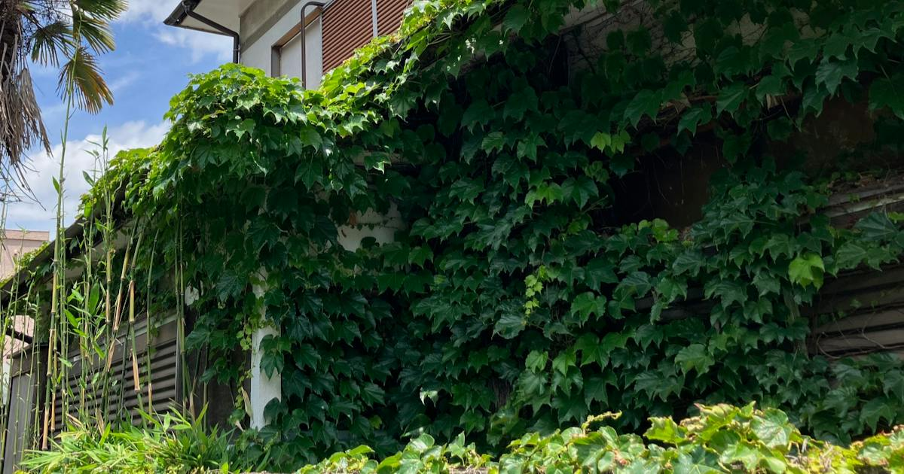
空き家・借金、相続放棄が急増 手続き期限は3カ月
「欧州の病人」を待ち構える財政規律の落とし穴 支持率低下と悪循環

「欧州の病人」を待ち構える財政規律の落とし穴 支持率低下と悪循環
楽画喜堂、本日10月19日配信開始の電子書籍リストです。＞
https://
rakugakidou.net/#20261019kindl
es
…
注意力がSNSやAIに消費される時代だからこそ、読書を楽しめる人の魅力が。みんな本を読みましょう。「20〜30代の男女によると、愛書家同士の恋愛関係を求める理由として、読書家には知的好奇心や豊かなコミュニケーション能力があり、異なる視点に対しても受容的な傾向があることが挙げられるという」
さらに表示 (元の投稿を開く)
この時代に「本を読める」ことは、恋愛市場でも有利だ | 「読書」と「恋人探し」の深い関係
この時代に「本を読める」ことは、恋愛市場でも有利だ | 「読書」と「恋人探し」の深い関係
「マジでやばい、この見てみろ…」若き海外ニキが『釣りキチ三平』に気づく→日本のファンたちが素晴らしさを語りまくり、矢口高雄先生の娘さんも反応
「マジでやばい、この見てみろ…」若き海外ニキが『釣りキチ三平』に気づく→日本のファンたちが素晴らしさを語りまくり、矢口高雄先生の娘さんも反応
まとめで紹介されてる漫画のカットを見ると、矢口高雄さんの自然描写の画力って圧巻すぎるなあとあらためて。↓

大阪岸和田のだんじり祭りで死亡事故が起きることについて、リスク評価が必要なのではという提言。「リスクがある伝統行事をめぐる議論は、「危ないからやめろ」と「伝統だから続ける」の対立になりやすい。だが本当の問題は、「どれほどの危険を、誰が、どのような条件で引き受けているのか」が曖昧な
さらに表示 (元の投稿を開く)
だんじり祭りで死亡事故相次ぐ…「危ないからやめろ」と「伝統だから続ける」の選択ではない、必要なリスク評価とリスク管理
だんじり祭りで死亡事故相次ぐ…「危ないからやめろ」と「伝統だから続ける」の選択ではない、必要なリスク評価とリスク管理
成層圏に無人航空機を飛ばして、通信、観測、防災など人工衛星のような役割を担わせる「成層圏プラットフォーム」（HAPS）の開発競争。ロケットが不要で、太陽電池で長時間飛び続けられるメリット。東大発のスタートアップが小型分散型の挑戦とか。↓
人工衛星に代わる新技術、東大発HAPSが翼幅30m実証機で初飛行に成功 | Forbes JAPAN 公式サイト（フォーブス ジャパン）
工衛星に代わる新技術、東大発HAPSが翼幅30m実証機で初飛行に成功 | Forbes JAPAN 公式サイト（フォーブス ジャパン）
プルデンシャル不正、国家的な再調査が必要 久保利英明弁護士

プルデンシャル不正、国家的な再調査が必要 久保利英明弁護士
暴力はいかんけど、めちゃめちゃわかりやすい。先生が男子生徒突き飛ばし、生徒が机にぶち当たって机が動く。先生「俺の突き飛ばした力がマグニチュード。ここで発生してる力だからどこから見たって威力は変わらない」「一方、突き飛ばされたこいつがぶつかった机。1番近くのはめっちゃ動いたけど、そ
さらに表示 (元の投稿を開く)
中学時代の塾の先生にマグニチュードと震度の違いを教えてもらったけど、教え方が衝撃的すぎて一発で覚えた「もしも今同じことをやったら大問題になる」
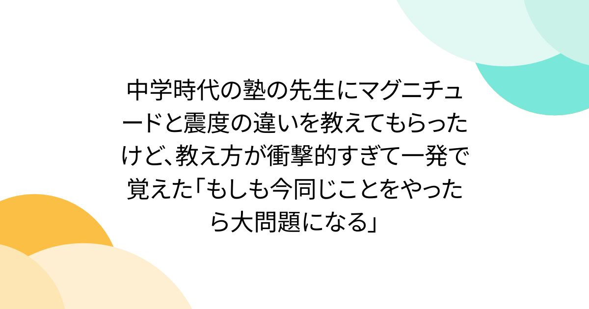
中学時代の塾の先生にマグニチュードと震度の違いを教えてもらったけど、教え方が衝撃的すぎて一発で覚えた「もしも今同じことをやったら大問題になる」
メインメモリ64GB、VRAM16GBで良ければ我が家のデスクトップも要件を満たすのだが、何せ古いRADEON VIIなので恩恵を受けるのは難しいのかな。HBM2だからメモリ帯域はそこそこあるのだが
むらさん(Murasan)
@murasametech
これはヤバすぎる
やはりメモリ増設するべきか⋯
今年のエアーフェスタ、どうしようかなぁ。
アップ!! 公式（RBC iラジオ）
@up738
おはようございます
10月19日(月)のアップ
メッセージテーマ
『 予約 』
みなさん最近予約をしましたか限定品の予約頑張った！今1番予約したいものなど、メッセージお待ちしています♪
7up@rbc.co.jp
#アップ738
家についったー
ネット証券、｢黒船｣取り込み先行 米国株23時間取引で対面証券と温度差
ネット証券、｢黒船｣取り込み先行 米国株23時間取引で対面証券と温度差
相次ぐ情報漏洩について、退会者の個人情報などサービス提供に必要のないデータは「本当に取っておくだけでよいのであれば、オフラインで、通常はアクセスできないような環境に置くことも考えられます。それが難しい場合でも、社内ネットワークのしかるべき安全なところに保管することが推奨されます」
さらに表示 (元の投稿を開く)
徳丸浩氏に聞く、タイムズカー事案から考えるユーザーデータ管理 保管場所と漏えいリスクの移転・回避、消去の判断体制
徳丸浩氏に聞く、タイムズカー事案から考えるユーザーデータ管理 保管場所と漏えいリスクの移転・回避、消去の判断体制
テスラさんがリポスト
ジョゼを好きになって2117日目のあさ！
おはようございます〜
お仕事のあさ〜
あ～ねむ〜い
ちゃんと寝てるようでまだまだ駄目だな〜二度寝すると丁度良いが。
昨日はPCで色々調べものをしていました。
マップでこれは良さげなものを見つけたときは良いな〜と思うけど片道４時間はちと遠い

タイムスリップして青春時代の自分に再会し、失敗したこの人生を繰りかえさせないように努力させる物語。めちゃめちゃ良い話だった。おすすめ。↓
アイアムマイファザー(青年漫画賞・編集長賞)・アイアムマイファザー | ビッコミ（ビッグコミックス）
アイアムマイファザー(青年漫画賞・編集長賞)・アイアムマイファザー | ビッコミ（ビッグコミックス）
どうしようもなくダメな人の人生をそのまんまに描いてリアルすぎる残酷さがあるんだけど、それを不思議なユーモアで包んでいて魅惑的な作品だった。何の成功も解決も無い人生の意味ってなんなんだ……って考えさせられる。イギリス映画。10月23日公開。「ジレンマから抜け出せない人々の、どうしようも
さらに表示 (元の投稿を開く)
映画『URCHIN／アーチン』公式サイト
映画『URCHIN／アーチン』公式サイト
【信州痛車フェス inなかの】 今年も開催です！！
https://
youtube.com/shorts/scpoeTn
Bmkw?si=0E-w8OfUtz7Wqnhg
…
@YouTube
より
なっちょ～？今年も開催！痛車フェス2026！個性あふれる痛車が大集合！さらに、スーパーカーの展示や試乗体験、マルシェ、...
youtube.com
デジタルの時代に、タブレットや紙での手書きメモはどういう役割を果たすのかについて語っています。↓
リニアとノンリニアを結ぶ触媒としての手書きメモ | 佐々木俊尚「毎朝の思考」/ Voicy - 音声プラットフォーム
佐々木俊尚「毎朝の思考」の放送「リニアとノンリニアを結ぶ触媒としての手書きメモ」（2026年10月19日放送） リニアとノンリニアを結ぶ触媒としての手書きメモ
voicy.jp
【大炎上】創価学会・元信者の高額献金を後悔する声が大拡散 #炎上
【大炎上】創価学会・元信者の高額献金を後悔する声が大拡散 - オレ的ゲーム速報@刃の記事ページ
jin115.com
フライパンで折りたたむだけのお手軽ホットサンド
ネオバターロールを半分にカット→卵と一緒に焼くと…… 驚きの食べ方に「すごーい！」「うわー めっちゃ斬新」
https://
nlab.itmedia.co.jp/cont/articles/
4044407/
…
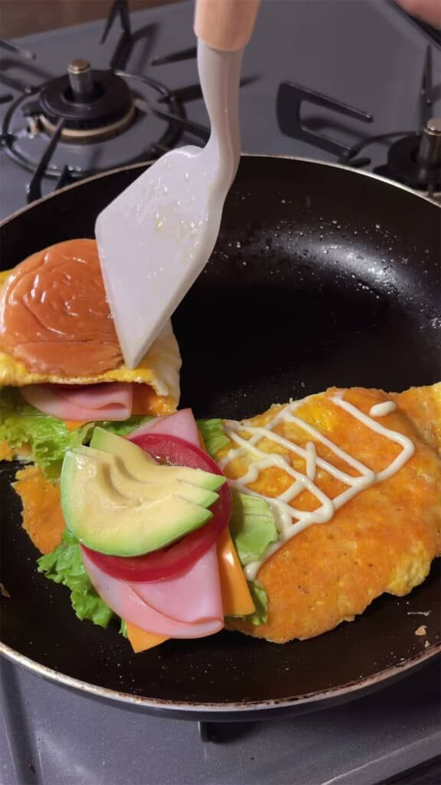
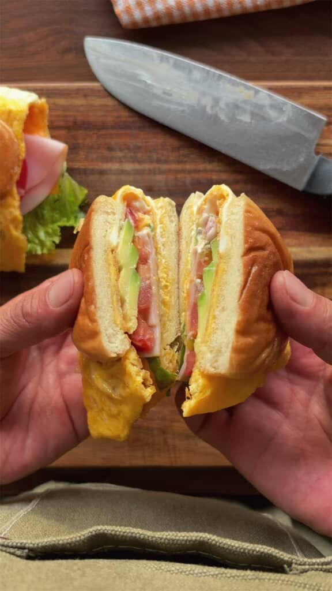
おはようございます。今日は10月19日、月曜日。
経産省が異例文書、国税庁案は政府方針に「逆行」 非上場株の評価で
https://
nikkei.com/article/DGXZQO
UA100FR0Q6A011C2000000/?n_cid=SNSTW005&n_tw=1792317051
…
利益を上げるほど相続税が高くなる国税庁の案を経産省は問題視。経営努力で高い利益率を出す中小企業には不公平に映ります。「カラスを大砲で打つ」という例えも。
経産省が異例文書、国税庁案は政府方針に「逆行」 非上場株の評価で
4Gamerの1週間を振り返る「Weekly 4Gamer」，2026年10月12日〜10月18日
https://
4gamer.net/s/G004099.2610
18002
…
今週はステキなプレゼントがあなたを待っています。失うものは何もないので，応募するしかありません。
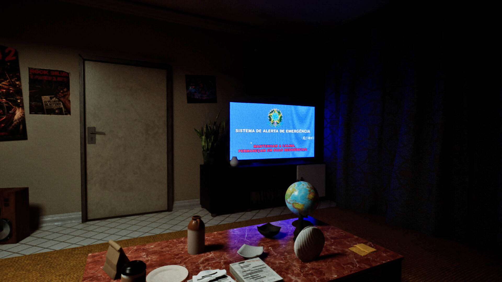
Access Accepted第875回：バルセロナ取材後記 〜 日本をゲストに迎えて動き出した南欧最大のゲームイベント
https://
4gamer.net/s/G003691.2610
16058
…
10月にスペインで行われた「SAGA Barcelona Game Fest 2026」を振り返る
IRなき横浜の成長どう描く 新市長に原沢敦美氏、「資源」活用を
IRなき横浜の成長どう描く 新市長に原沢敦美氏、「資源」活用を
ホットプレートを浮かせる発想。山崎実業のラックで食卓のスペースが2倍になる BuyPR
ホットプレートを浮かせる発想。山崎実業のラックで食卓のスペースが2倍になる | ギズモード・ジャパン
マイナ認証の導入、デジタル庁に相談6倍 不正アクセス相次ぎ関心
https://
nikkei.com/article/DGXZQO
UA111HE0R11C26A0000000/?n_cid=SNSTW005&n_tw=1792311653
…
スマホでマイナンバーカードを読み取るだけで本人確認ができる仕組み。企業は運転免許証などの画像を保有する必要はありません。取得する情報も必要最小限に抑えられます。
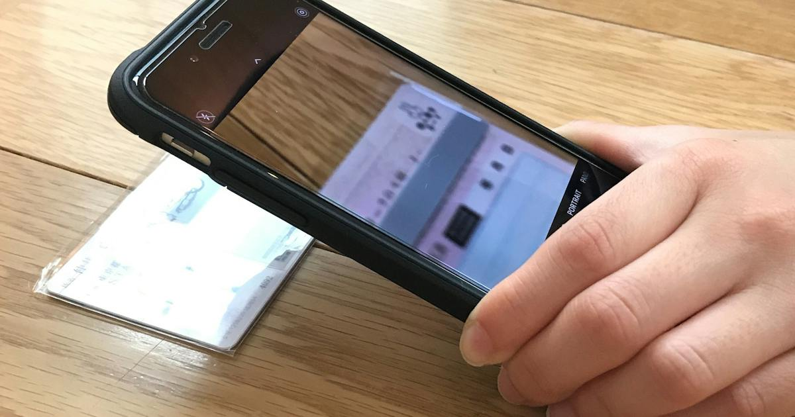
マイナ認証の導入、デジタル庁に相談6倍 相次ぐ不正アクセスで関心
ナリタヤ、新スタイル店舗のちょいハレ感 千葉北部で日常彩る
ナリタヤ、新スタイル店舗のちょいハレ感 千葉北部で日常彩る
狂騒AIに歴史の警鐘 膨張する投資、逆回転のリスク
https://
nikkei.com/article/DGXZQO
FK101HG0Q6A011C2000000/?n_cid=SNSTW005&n_tw=1792309451
…
「2年以内に債務危機が起きる」と語るのは著名投資家レイ・ダリオ氏。膨大な資金を吸い上げるAIブームに、世界恐慌につながる狂騒の時代との類似性をみています。
狂騒AIに歴史の警鐘 膨張する投資、逆回転のリスク
EU、ロシアの「ハイブリッド攻撃」に協調対応へ 増える破壊工作
EU、ロシアの「ハイブリッド攻撃」に協調対応へ 増える破壊工作
マクロン仏大統領、暴動めぐり「代償を」 物価高・教育デモには理解
マクロン仏大統領、暴動めぐり「代償を」 物価高・教育デモには理解
不眠症治療薬や快眠グッズ、広がる睡眠市場がわかる10選
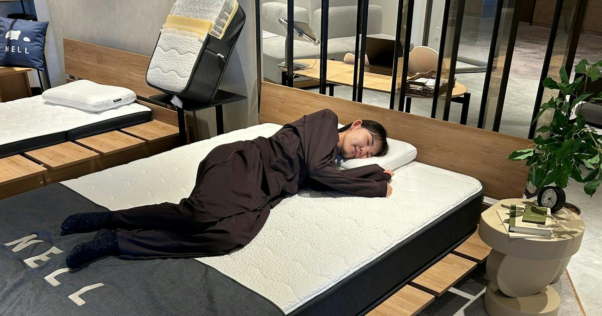
不眠症治療薬や快眠グッズ、広がる睡眠市場がわかる10選
ラピダスも頼る半導体クリーンルーム テクノ菱和、収益性は大手超え

ラピダスも頼る半導体クリーンルーム テクノ菱和、収益性は大手超え
日米、情報通信分野の協議枠組み新設 日本は米輸入規制の除外探る
日米、情報通信分野の協議枠組み新設 日本は米輸入規制の除外探る
家賃高騰で社宅に脚光、若手定着へ企業支援厚く 管理戸数25％増
家賃高騰で社宅に脚光、若手定着へ企業支援厚く 管理戸数25%増
元スパイの男女が実子ではない子供を育てる為に夫婦を演じ続ける"Unfamiliar"
『スパイファミリー』のドイツ版的なシリアスさとロシアの陰謀と人狼的な内通者探しという大人も楽しめるストーリーなのにあまり有名ではない様子。
https://
netflix.com/fr/title/81720
669?s=i&trkid=13747225&shareType=Title&shareUuid=737DCA92-96FC-49BD-8812-AACC04597E99&trg=twt&unifiedEntityIdEncoded=Video%3A81720669&vlang=fr
…
むくり。
中国EV株にEU輸入枠だけでない逆風 「急造車」規制、税還付も縮小
中国EV株にEU輸入枠だけでない逆風 「急造車」規制、税還付も縮小
インド中銀、13年ぶりの緊急ルピー防衛策 貿易や社債に副作用
インド中銀、13年ぶりの緊急ルピー防衛策 貿易や社債に副作用
日銀の2%物価目標、「到達より安定」に重心 政府との足並みに苦慮
日銀の2%物価目標、「到達より安定」に重心 政府との足並みに苦慮
トヨタ、先進技術「まずはカローラ」 発売60年で次世代車へ進化

トヨタ、先進技術「まずはカローラ」 発売60年で次世代車へ進化
テスラ日本法人社長「FSDの26年解禁、100％実現へ最大限努力」
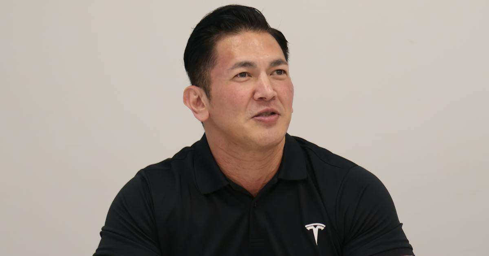
テスラ日本法人社長「FSDの26年解禁、100%実現へ最大限努力」
NECや帝人ファーマ、研究施設を新興に提供 都が仲介し協業促進
NECや帝人ファーマ、研究施設を新興に提供 都が仲介し協業促進
ユキグニ、埼玉に新研究拠点 「キノコのお肉」事業の拡大目指す
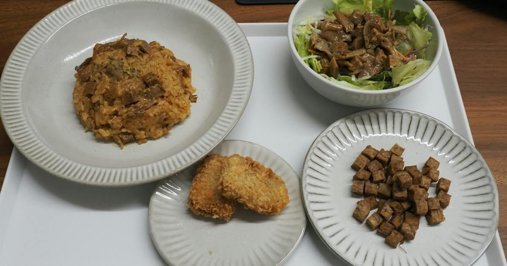
ユキグニ、埼玉に新研究拠点 「キノコのお肉」事業の拡大目指す
それガルパン
Katana Edge＠中2超ポリコレリベサヨうんこ美少女 (cv: 広川太一郎)
@amiga2500
やっぱりこういうのって、だんじり祭り実行委員会から見舞金とか出て、家主が「やったぁ！これで新築出来る！」って喜んだりしてるのかなｗ
せめて111514人欲しいゾ

Al Jazeera English
@AJEnglish
速報：2023年10月以降、ガザ地区保健省によると、イスラエルのガザに対するジェノサイド戦争により、少なくとも74,475人が死亡し、175,517人が負傷しています。
LIVE updates:
https://
aje.news/e9uqrl
「信仰」はどこへ行ったんだ…
かみぱっぱ
@kamipapa2
男でもやべぇって思うのに、これ女の人からしたら恐怖以外のなにものでもないでしょ
柿を毎日6個食べまくっていた人、ヤバイことになる・・・ #食べ物・飲み物
柿を毎日6個食べまくっていた人、ヤバイことになる・・・ - オレ的ゲーム速報@刃の記事ページ
jin115.com
なるせひろのりさんがリポスト
ハムは、強奪されていない。
答え合わせ。

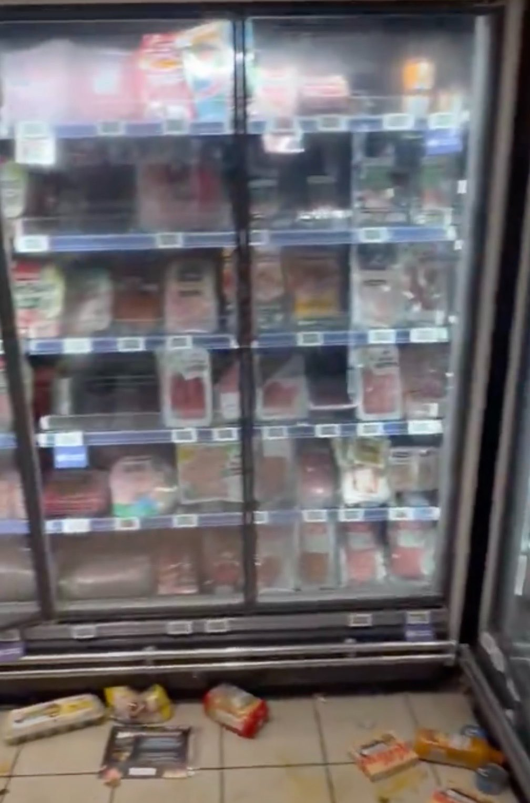
End Wokeness
@EndWokeness
ハムは略奪されていません。なぜだろう… x.com/arthur_duterqu…
日本経済新聞 電子版（日経電子版）さんがリポスト
英ＡＩデータセンター計画でマイクロソフト撤退か 英新興に打撃
英AIデータセンター計画でマイクロソフト撤退か 英新興に打撃
Torishima / INTPさんがリポスト
活版印刷以降に獲得した印刷メディアの最大の利点が、現在のデジタルレンタル方式の非購入＆非所有の極めて偏った歪な商業的利益優先の在り方により殺されている事例だ。プラットフォームが死んで表現物がすべて喪失されることで、万人が知を所有する人類文明の礎たる構造が破壊されていることがわかる
Yahoo!ニュース
@YahooNewsTopics
【コミックシーモア 再開見通せず】
https://
news.yahoo.co.jp/pickup/6599287
労働条件明示の違反、25年は3割増 明示義務項目追加に対応遅れ
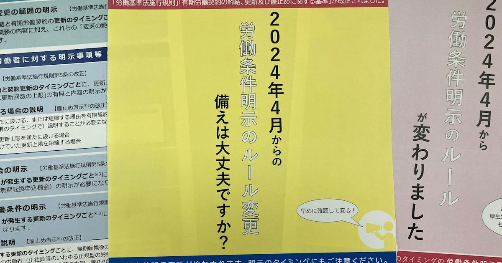
労働条件明示の違反、25年は3割増 明示義務項目追加に対応遅れ
とりしま (Sub I/O)さんがリポスト
ライブ音響上映は、音量音質ともに良くも悪くも「ギャンブル」です。丸の内や幕張のときはまた違います。
なにしろ「映画館のスピーカーじゃ物足りないから特設スピーカーを持ち込んで爆音でやろうぜ！」という、普通じゃないことをやるので、毎回出来が違いますし、正直「事故」率も高いです。


音で楽しむ映画祭 全国各地にて随時開催中！
@liveaudio_fes
音で楽しむ
109シネマズ港北 映画祭
#ライブ音響上映
10/30(金)～11/5(木)＜7日間限定＞
初開催決定
映画館に特設された
ライブ用スピーカーで
#超かぐや姫！ を
全身で浴びるように楽しもう
10/31土 21:25
11/2月 21:05
11/3火祝 発声18:20／21:15
11/4水 12:10
動物の交通事故死ネコ4割 つくば市、飼育管理に課題
動物の交通事故死ネコ4割 つくば市、飼育管理に課題
立憲の投票先の割れ具合もそうだし、言うて原澤氏支援陣営もだいぶ割られてる感はあるものの、やはり目を引くのが参政党。票固めが共産党や公明党ばりに固い。地方選挙でのキャスティング・ボートとしての存在感は増す一方ですな。
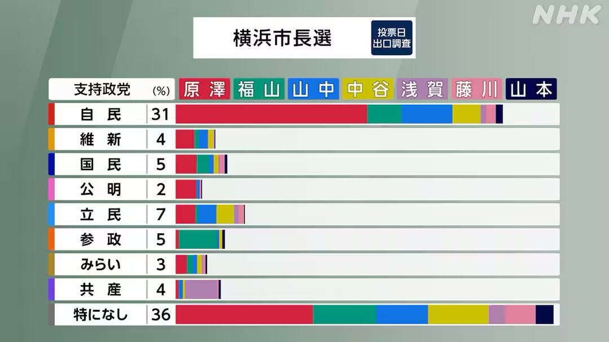
おぐ
@juoggggg
横浜市長選出口調査（政党別）
NIDONE！
からの
がっそう！
からの
おしごと！
からの
夜のしごおわ！
からの
帰宅してシャワー等済ませたので、今週もお疲れさまでしたぷしゅ〜
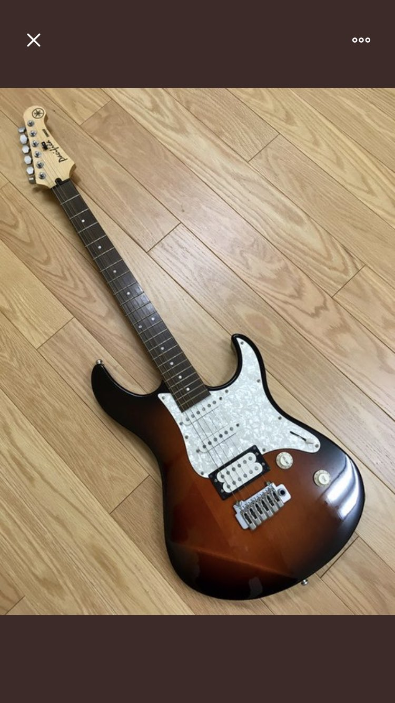
高市政権1年、家計のゆとり「官製」段階 補助金で実質賃金1%増
高市政権1年、家計のゆとり「官製」段階 補助金で実質賃金1%増
日本経済新聞 電子版（日経電子版）さんがリポスト
地銀の不動産融資、過去最大の伸び 依存度はバブル期の2倍近く

地銀の不動産融資、過去最大の伸び 依存度はバブル期の2倍近く
日本株、抜け出せるか「魔の10月」 なお残る米コアウィーブショック
日本株、抜け出せるか「魔の10月」 なお残る米コアウィーブショック
OpenCode の API キー漏洩で Google アカウント BAN されたってこと・・・？？
otsune （おおつね まさふみ）
@otsune
OpenCodeのAPIKEY漏洩で、Google API側は不正利用を検知して気を利かせてアカウント停止機能で対処してくれてた。
しかし規約違反banと同じ異議申し立てform表示のシステムを使ってたので、ユーザーの俺からしたら「色々とAIを使ってたらGoogleアカウントがヤバいことに」とテンションだだ下がりな感じ
ここはどこだろ 近くに無さげ
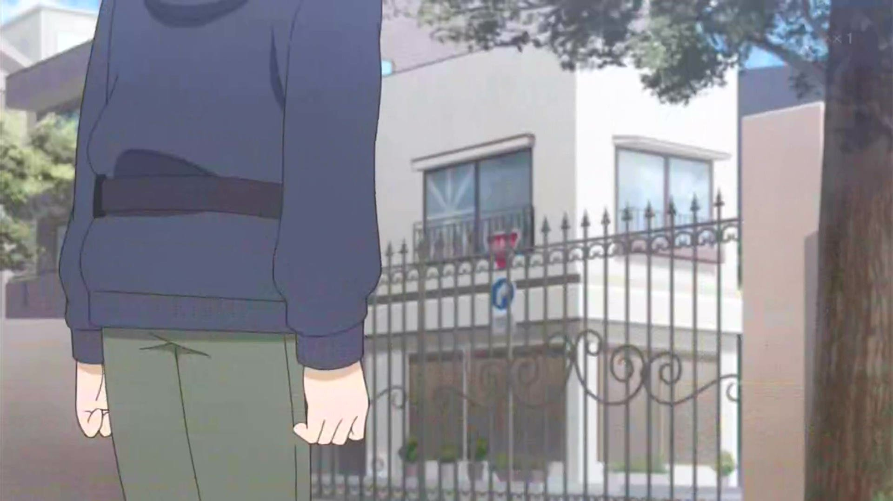
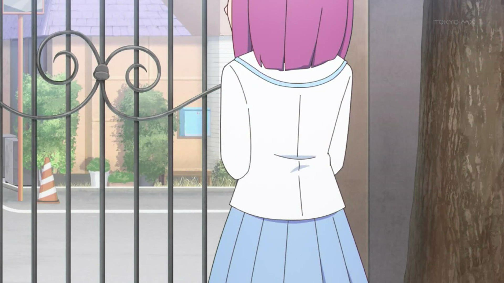
うみゆき@AI研究さんがリポスト
なるほど、ゲームAIクローン問題は、こういうことですね。理解しました。これに対するカウンター技術も出てくるだろうけど、ちょっと時間はズレるでしょうね。AIによるハッキングを抑えきれないのと同じ根ですね。完全なパクリを行われても、対処が現実的に追いつけないと。
manekinecot
@manekinecot
#IndieGameIsDead
私が2年かけて作ったゲームのexeをclaudeに解析させ「stage1作って」だけで10分で出てきたのが、コレ。
無理に繋いでる元のmotionが悪いのでそこは品質低くみえるけどほぼ完璧に再現。3dアセットも完璧。これが他人のexeだと思ったらゾッとする…
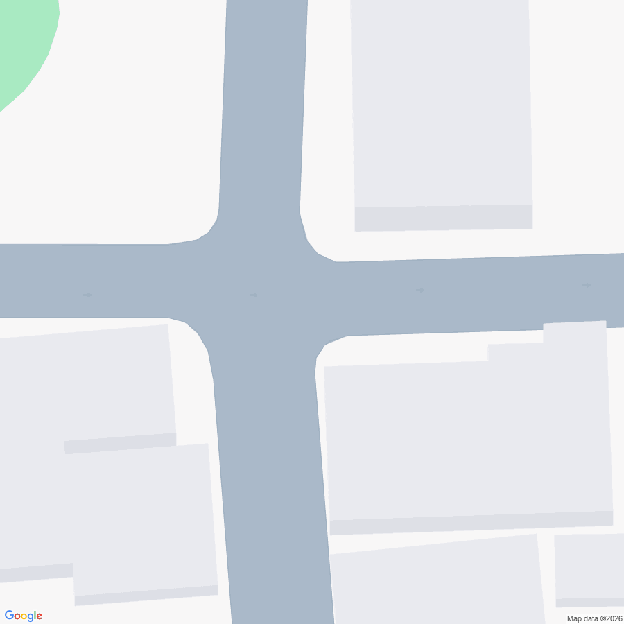
Find local businesses, view maps and get driving directions in Google Maps.
google.co.jp
エターナル総書記さんがリポスト
金持ちたちが買い物をする場所が略奪されるのを心から喜ぶような、純粋で無垢な人々のグループがいるのを見かけます。これは経済学を理解していない結果です。
一つずつ説明しましょう：
1) 以下に挙げる店舗のいくつかでは、100ドルで仕入れたバッグが50,000ドルで販売されています。
2)
さらに表示 (元の投稿を開く)
ibrahim Haskoloğlu
@haskologlu
フランスの抗議活動で、国の19の異なる都市で略奪された一部の場所：
• ロレックス
• アップル
• ルイ・ヴィトン
• ショッピングモール
• ホテル1軒
• ヒューゴ・ボス
• エルメス
• 宝石店
• 観光列車 x.com/haskologlu/sta…
世界最強の魔女、始めました
第1話視聴
スキル名がインターネットだから、転生ものかと最初思ったけど、インターネットというワードを知らないみたいだし、そうではないのか
現状、インターネットは攻略サイト閲覧しかしてないけど、他の目的で使用する時は来るのかね
#世界最強魔女
#せかまじょ
お背中が…！！
名古屋周辺、観光や仕事で何度も来てるけど大須周辺しか土地勘が無くて行動パターンが固定化しがちｗ
Torishima / INTPさんがリポスト
API料金払ってるユーザーというより正確にはopencodeconsole使ってる人。
基本的にopencodeで無料モデル使ってる人は対象外。
【！？】ドジャース・大谷翔平選手が着用したユニホーム、ガチでとんでもない金額で落札されてしまう・・・ #芸能・スポーツ
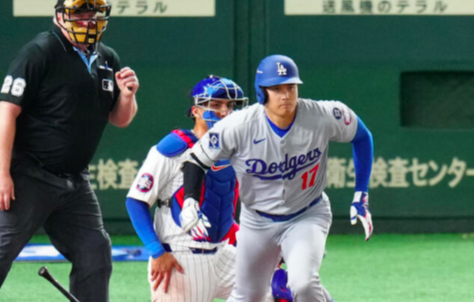
【！？】ドジャース・大谷翔平選手が着用したユニホーム、ガチでとんでもない金額で落札されてしまう・・・ - オレ的ゲーム速報@刃の記事ページ
jin115.com
名古屋の戦利品であります
ダラダラしすぎて14時に家出て16時半に現地入り、オアシス21で物販とルカレンのスタンプだけ回収して大須をブラブラしてた
ボークスの閉店ギリギリに滑り込んでシンナーとグロスバーニッシュ買えた
（DDSレンくんの爪塗装用）
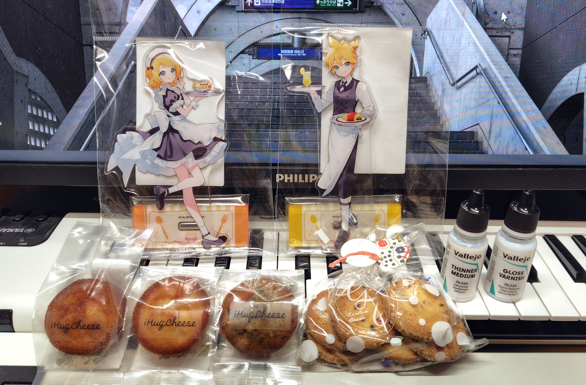
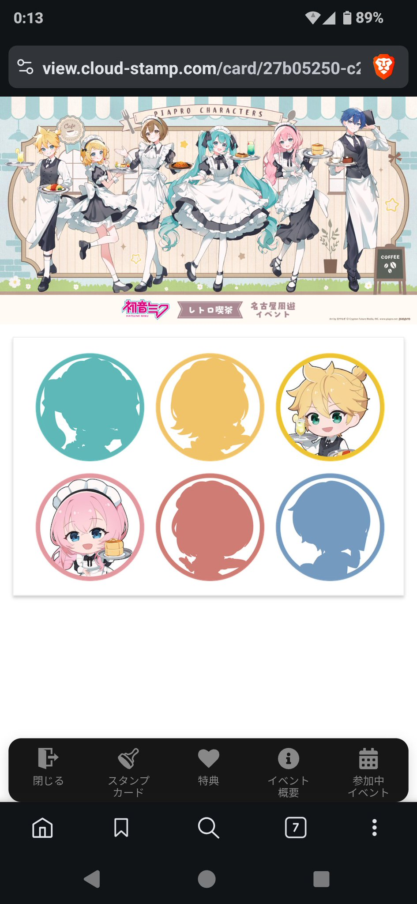
モナリザが燃えて失われても、今日pixivには新しい絵が上がって、明日にも上がる、それで良いと思う。
ふぇむさーど
@Amaurot_003
美術品や歴史的建造物が破壊されて嘆くインテリの気持ちはよくわからないんだよな。そんなもの我々の毎日の前には無益でしかないし、人類の叡智でもなんでもないと思う。
今はおそらく生産できないという点でオーパーツみたいな代物やな・・・なんで指先大のHDDが作れるんだ
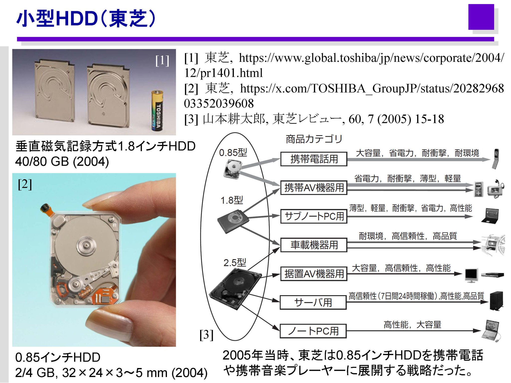
田中 秀治 / Shuji Tanaka
@mems6934
東芝は小型化の方向にHDD技術を突き詰めた。スマホネイティブ世代には信じられないと思うが、東芝の1.8インチHDDは2001年に初代iPodに搭載された。最初は5 GBだった記憶容量は320 GBまでになった。さらに、0.85インチ・切手サイズのHDDも開発された。今にしてみると滑稽に見える程に尖った技術だった。 x.com/mems6934/statu…
技術讃歌みたいな節は結構あるよなあ
超かぐシナリオ論、あまりにも何度も見過ぎてシナリオや構成の流れを完全に記憶してしまったが故にフラットに全然わからん・・・２週目くらいの頃に記憶をリセットしたい
ダブルCEO!?
山本一成ニューラルロケットとチューリングのCEO
@issei_y
【ニューラルロケットという会社を始めました】
100% AI-Designed Rocketで、再利用ロケットをつくります。Turingで培った組織づくりを、今度は宇宙へ。
@NagataninoHasse と一緒に立ち上げました！すでに20kg級のホッパーを開発しています。
ミッションは「We Overtake
>> 映画のストーリーの良し悪し（好みと合う合わない）は観てみないと分かりえない事なので、どう足掻いても作品を選ぶ基準にはならない
さらに表示 (元の投稿を開く)
シン・かわうそ
@bossakawauso
映画のストーリーの良し悪し（好みと合う合わない）は観てみないと分かりえない事なので、どう足掻いても作品を選ぶ基準にはならないし、宣伝や口コミの段階で訴求ポイントにはならない x.com/bossakawauso/s…
WordPress等がリモードコード実行(RCE)されたケースでデータベースにまでアクセスされることが主な脅威ですが、これを避ける「妙案」は現在ないという主張です
川井昌彦＠Webディレクターなど
@sakuragi_kei
データベース側で外部からのアクセスを拒否していれば大丈夫だと思ってたんだけど、甘いのかな？
アニメ映画で席が完売することあるんだ・・・
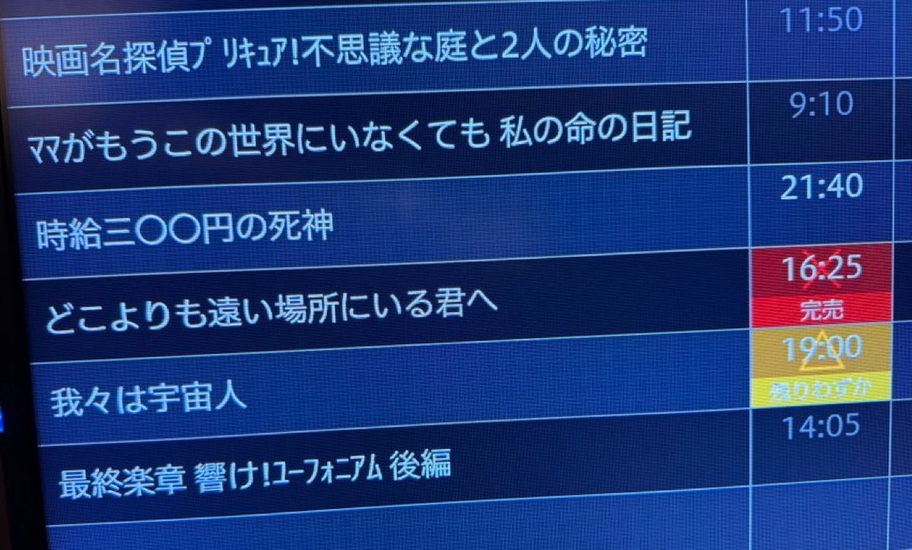
シン・かわうそ
@bossakawauso
どこきみが各劇場で小箱に追いやられている＆松竹にしては宣伝頑張ってる＆SNSでの口コミ効果が表れているおかげで満席の所が増えてるね x.com/kagetsuya2002/…
人気漫画『怨み屋本舗』シリーズがほぼ全巻「26円 or 100円」で買える激安セール開催！！26周年＆シリーズ通算100巻到達記念キャンペーン！！ #セール情報
人気漫画『怨み屋本舗』シリーズがほぼ全巻「26円 or 100円」で買える激安セール開催！！26周年＆シリーズ通算100巻到達記念キャンペーン！！ - オレ的ゲーム速報@刃の記事ページ
jin115.com
NHKニュースより
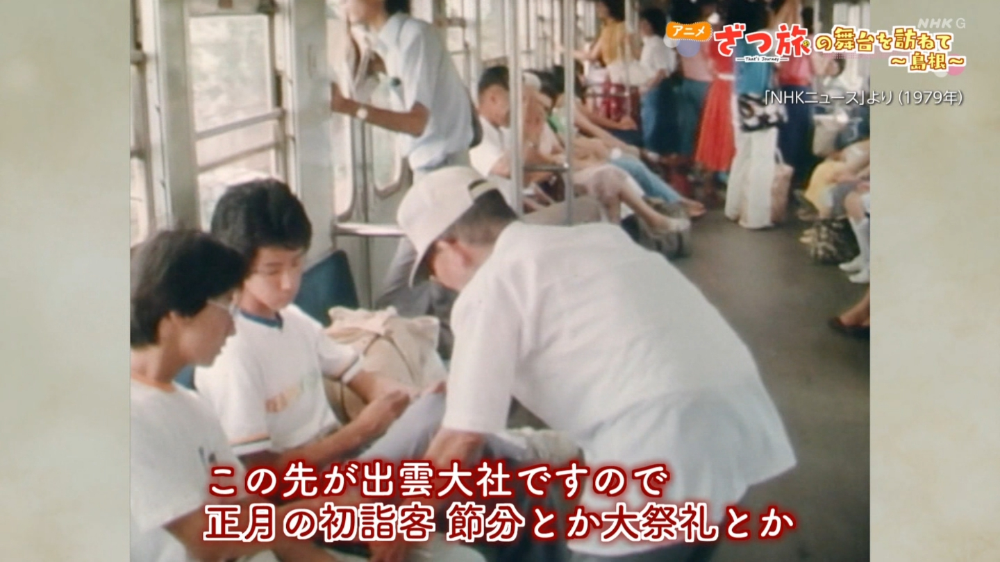
NHKは資料映像持っているのが強い
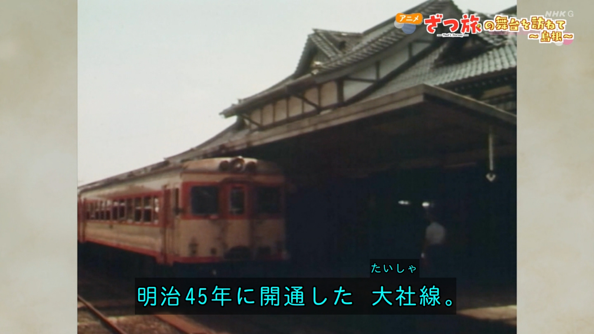
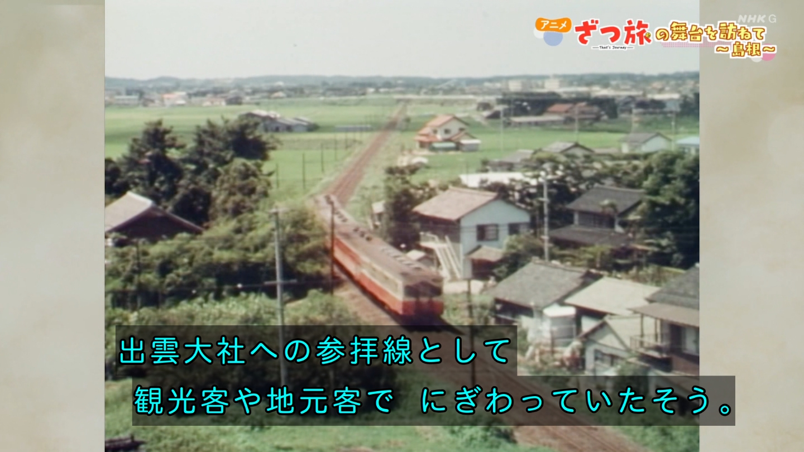
NHKでざつ旅始まった
ナレーションそのままでワロタ
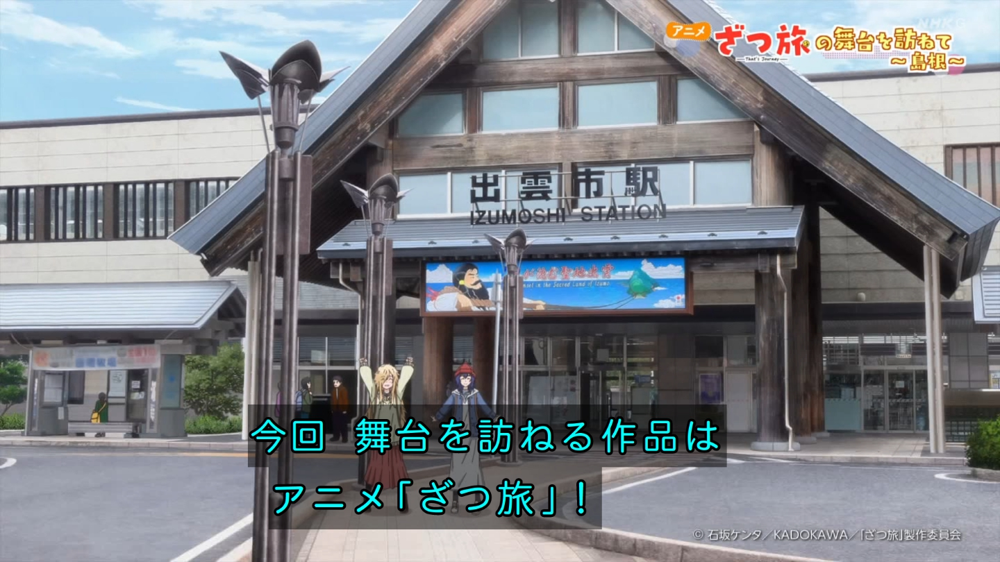
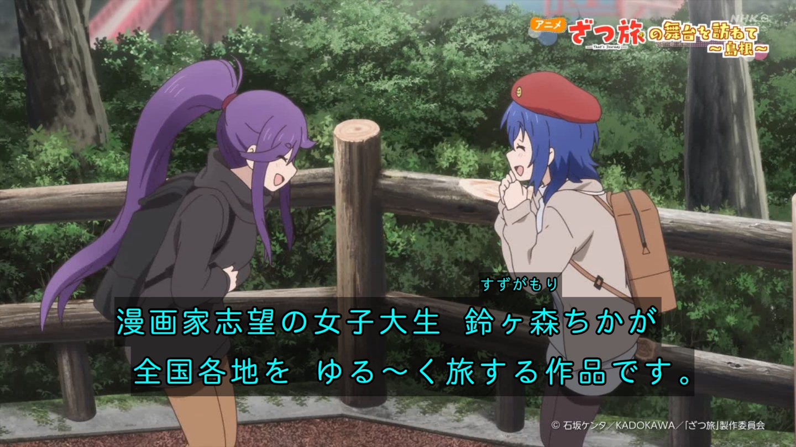
HPゼロです、翔子さん、、ねゆ
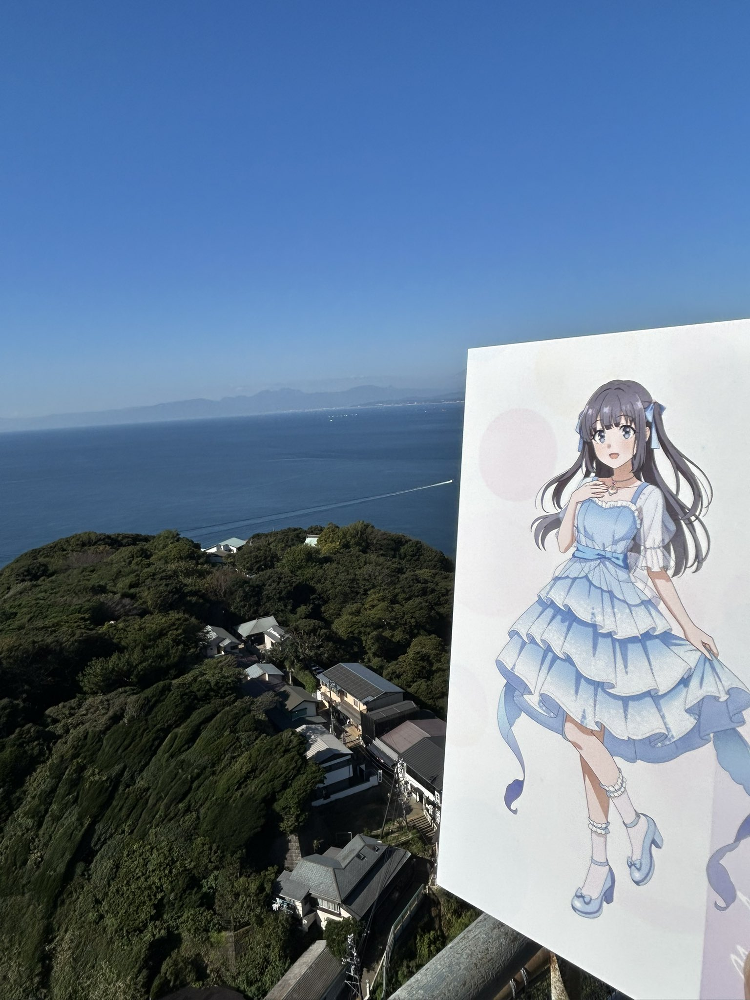
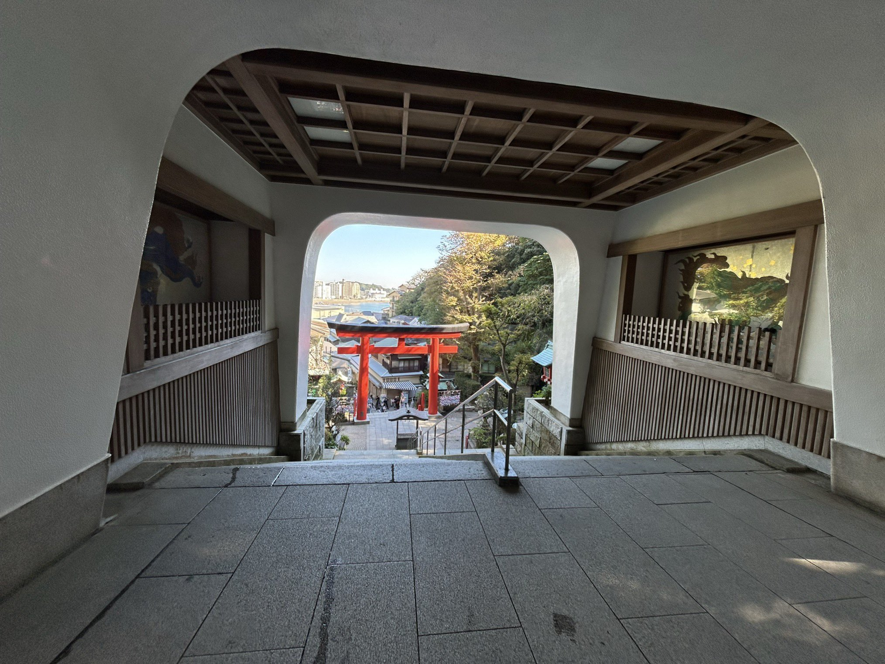
というか、"In Sides"の30周年盤は出さないんでしょうか…Orbialのアルバムの中では最高傑作だとおもってるんですが。
#techno #electronic / #LondonRecords
Orbital - Mother, Maiden, Crone (feat. Maxine Peake)
https://
youtube.com/watch?v=RChplJ
sbtuU
…
来年3月に出る11枚目のアルバム'Other'からの先行EP。
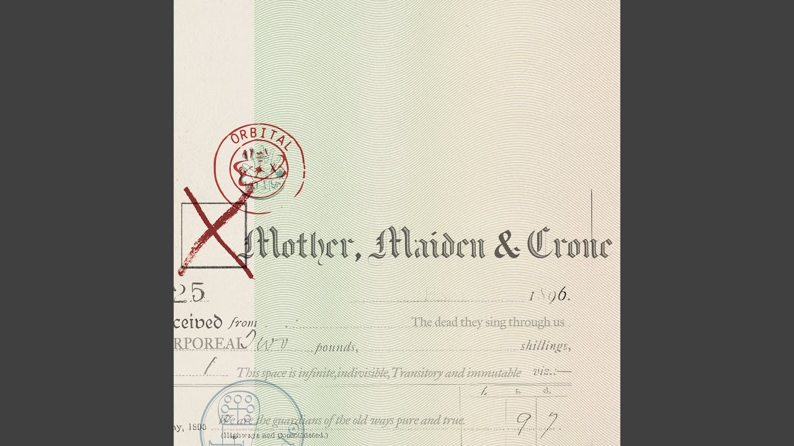
Mother, Maiden, Crone (feat. Maxine Peake)
Orbitalの来年3月にLP出すのね。前作はセルフリリースだったけど、今回は古巣London Recordsから。リードシングルは既にリリースされてるけど、普段の作風と少し雰囲気が違う。ハロウィンっぽい？
Orbital announce new album, ‘Other’, share single featuring Maxine Peake: Listen
Wordle 1,948 3/6
Torishima / INTPさんがリポスト
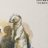
電子書籍のデメリットが露呈したな。紙媒体は関係ないもんね。
Torishima / INTPさんがリポスト
本名や住所が流出していないのは朗報（そう言えば、そもそも登録する場所ないか）
コミックシーモア【公式】(シーモア)
@comic_cmoa
１．対応状況および調査進捗
今回の不正アクセスにおける侵入経路および攻撃手法の特定を行い、対処を実施しております。
あわせて詳細な解析を行い、不正アクセスによる影響範囲を特定中です。
２．影響範囲の調査状況
江ノ電 青春ブタ野郎はディアフレンドの夢を見ない 記念入場券 きた あざますっ
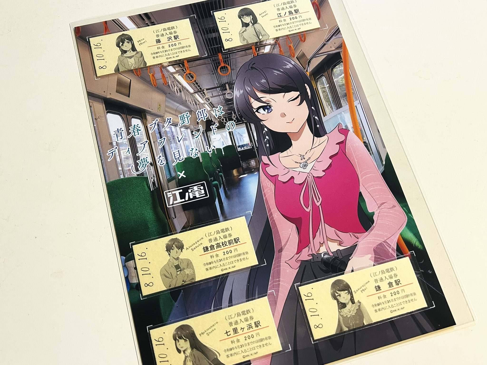
【ヤバイ】冬眠前でクマが活発化・・・餌を求めて降りてくるぞ！ #酷い話・事件
【ヤバイ】冬眠前でクマが活発化・・・餌を求めて降りてくるぞ！ - オレ的ゲーム速報@刃の記事ページ
jin115.com
そうそうそう、結局マスピ顔が悪いというより Slop に感じられる「何か」が悪いみたいな、なるべくそういう AI 臭い癖を脱臭したいよなあ（感覚的なものなので気づかない方もいるようだが・・・）
賢木イオAIイラスト
@studiomasakaki
AI創作に取り組んでる方々と話してると、最近は「マスピ」じゃなくて「slop感」って表現するようになってきてるなーと感じる。
既視感のある顔立ちや画風だけじゃなくて、GPTポエムとか粒状ノイズとかピクサーっぽい動きとかをひっくるめた「手抜き感」をどう処理するか、みんな試行錯誤してる
江ノ島 赤城郁実さん 丸だいさん開店前でもチェックできて助かりますー ガラスの向こうで撮影高難度 開店後は未確認 ナナニジもあるー アニプレシナジー、、
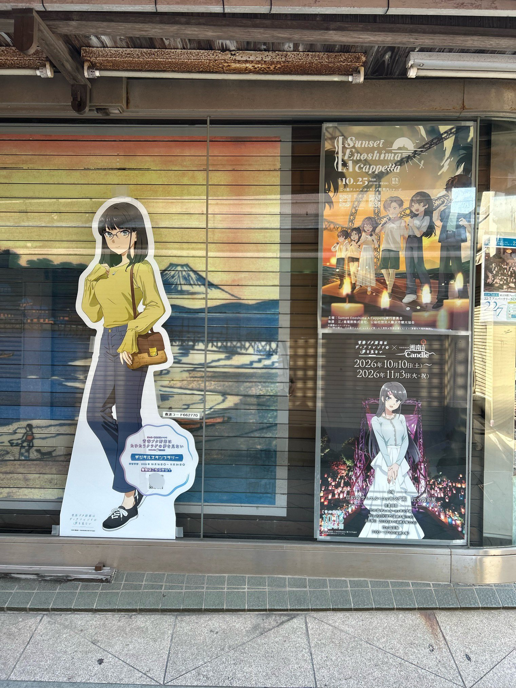
━━━━━━━━━━━━
#楽園追放
心のレゾナンス
11.13公開
━━━━━━━━━━━━
ムビチケ発売中
https://
rakuen-tsuiho-r.com/ticket/
映画館情報
https://
toei-screeninginfo.azurewebsites.net/theaterlist/02
992
…
最新PV
https://
youtu.be/gdqs6y-6R3g
♫主題歌インタビュー
https://
youtu.be/r5Cws5OzieA
ソワネって日常アニメしか請けたくない路線でやっているのか？
何か新しい人材需要が突然湧き上がるというよりは、IT に携わる誰もがセキュリティを意識せざるを得なくなるだけでも、何十万人にはなっちゃうんだよね
武田 一城｜サイバーセキュリティ（気が付けばセキュリティ歴が20年）
@ichijyo1974
数十万人のセキュリティ人材が必要という件
ちょっと逆張りのようになってしまいますが、数十万人のセキュリティ人材が必須とかは少し早計かも知れません。
昔から言われていることですが、セキュリティは利益は生み出しませんし、結構なコストになる。
Torishima / INTPさんがリポスト
ほんと言語化しにくいし、常に移り変わりますもんね、slop感って。人によっては全く感じられなくて、満足するケースもあるし。でもセンスがある人がきちんと手を掛けたものはちゃんと面白がられているし、私もそれがやりたいなあ〜
年末恒例「RTA in Japan Winter 2026」採用ゲーム発表！ 『SILENT HILL f』や剣なし『ゼルダ』、『ドンキー64』0.0%などずらり
https://
gamespark.jp/article/2026/1
0/18/173770.html?utm_source=twitter&utm_medium=social&utm_content=tweet
…
今年も12月25日から31日まで開催！
応援。noteと日本昔ばなし連携できたりせんかな
まんが日本昔ばなし【公式】
@aikikakucenter
プリンセス駅伝 運営が素人すぎてヤバい事になってる
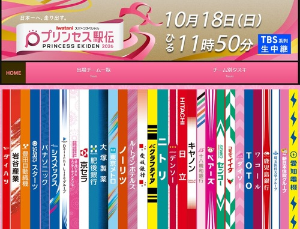
プリンセス駅伝 運営が素人すぎてヤバい事になってる : ハムスター速報
Torishima / INTPさんがリポスト
私めっちゃ健康になりそう（毎日ウォーキング３km）
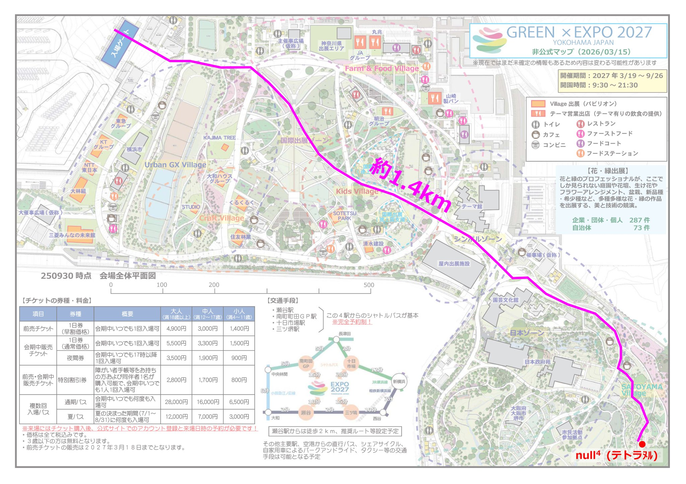
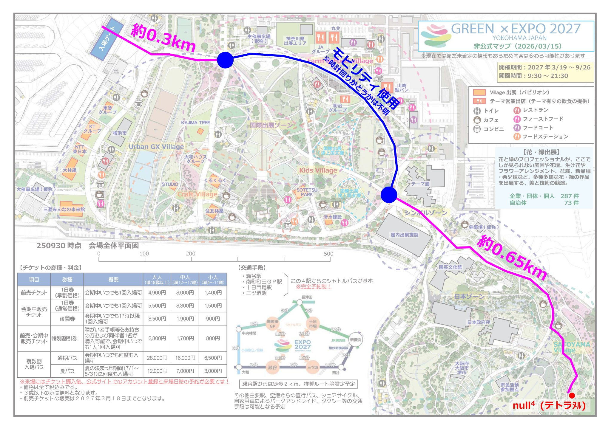
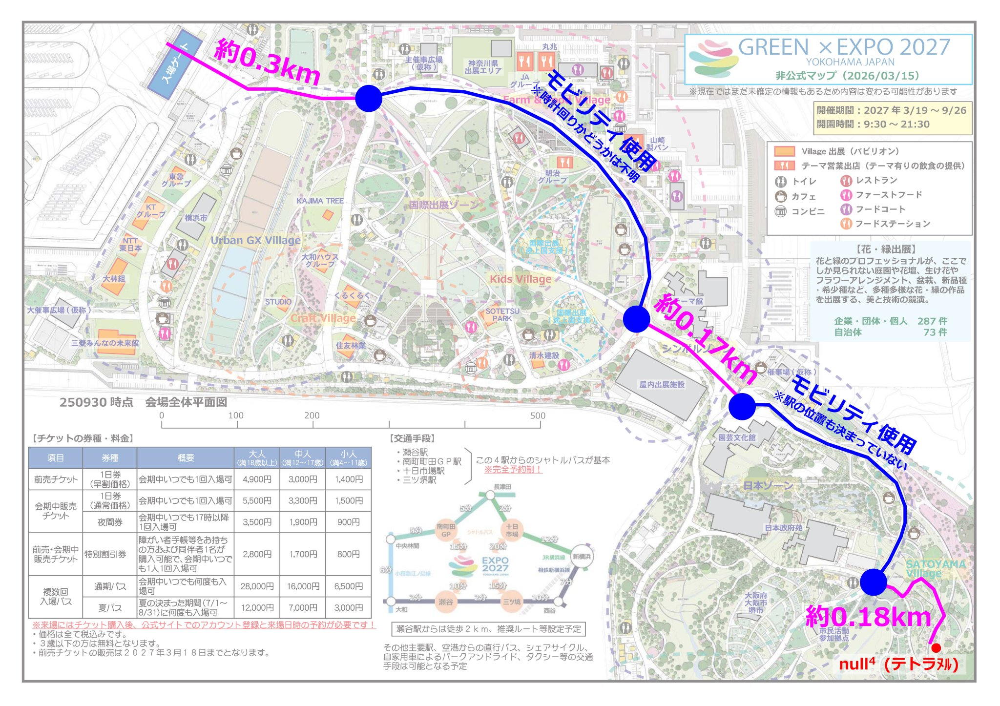
つじ@EXPert Otaku11/15サークル参加
@t_tsuji
横浜園芸博、入場ゲートからnull4（テトラﾇﾙ）までの歩行距離
1枚目：徒歩
2枚目：北西側モビリティ使用
3枚目：モビリティフル使用（南東側の駅の位置は予想程度）
待ち時間の無い徒歩が一番アドバンテージがあるとは思います
移民推進派のリベラル女、
自分たちが受け入れた移民たちに自分の店を略奪され、その後何をされたかも分からない
いい気味だ
受け入れるなら自分の家にでも住まわせておけ
るぅたそ
@kohakuototo
フランス人女性が、家族の店を物色するこれらのアフリカ系イスラム侵入者たちに対して、
自分は彼らの味方であり、彼らがここに来るために投票したし、警察の予算削減にも投票したと説明したが、
彼らは笑って彼女の店から略奪した。
リベラルの行き着く先。
Torishima / INTPさんがリポスト
AI創作に取り組んでる方々と話してると、最近は「マスピ」じゃなくて「slop感」って表現するようになってきてるなーと感じる。
既視感のある顔立ちや画風だけじゃなくて、GPTポエムとか粒状ノイズとかピクサーっぽい動きとかをひっくるめた「手抜き感」をどう処理するか、みんな試行錯誤してる
テロリストの正体見たり
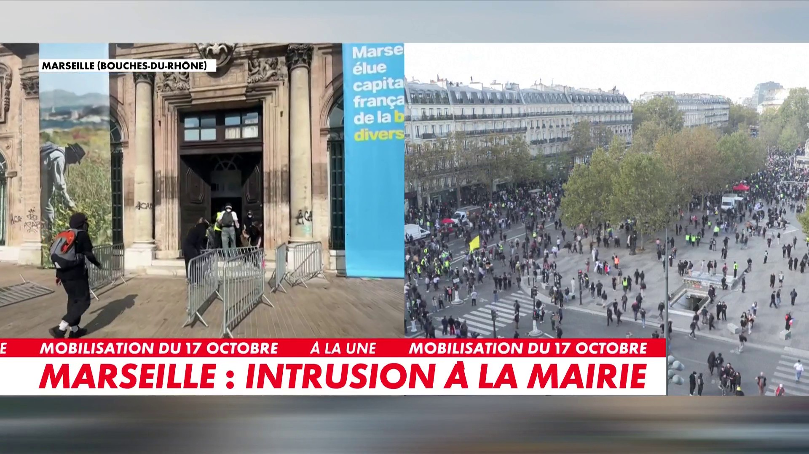
Shai Goldman
@shaig
マルセイユ市庁舎が陥落し、内部にパレスチナ国旗が掲げられています。
美術品や歴史的建造物が破壊されて嘆くインテリの気持ちはよくわからないんだよな。そんなもの我々の毎日の前には無益でしかないし、人類の叡智でもなんでもないと思う。
もうスマホを開かなくてOK。睡眠を守るためのニトリ製プロジェクター時計
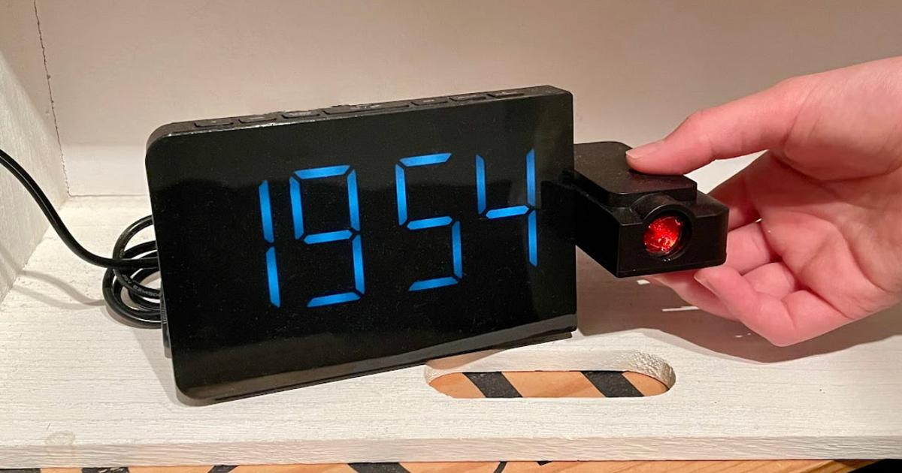
もうスマホを開かなくてOK。睡眠を守るためのニトリ製プロジェクター時計 | ギズモード・ジャパン
いい天気だったのでお布団洗ったら、微妙に乾き切っておらずしっとりしてるの。
横になってると、じんわり水分が服に移ってしっとりしてくるの。
悲しい。
人間はどこまでの惨状を目にすれば正気に帰るのか、今試されてる気がする
これでもまだ「移民は悪くない」など言い続けるなら反逆者、暴徒と同罪
E. Kishigami
@kishigami64437
フランスで移民に燃やされたのってこれだよ？これ今の技術で再建できるの？もう二度と造れないんじゃない？
しかも放火した移民は歓声上げて大騒ぎしてる。猿どもは自分が何をしてるのか理解できてない。本当に、本当に洒落にならない事態。
ポン☆潤々さんがリポスト
特に宮城に限定した話ではないのですが、みなさんが「ヨークベニマル」をなんて呼んでるのか気になっています。
ちなみに、南東北3県と北関東2県にのみ展開するスーパーです。
今日の仕事終了
いやぁ、忙しかった…
明日夜勤だから、しっかり休まないと…
クズミミのライブ行きたかったな…
カナリリのライブ行きたいな…
エフニナのライブ行きたいな…
トゲトゲのライブ行きたいな...
ダイダスのライブ行きたいな…
でも大丈夫
11/3の赤色で全てが報われるから…
頑張ろう…
モルックビール残ってるかなぁ
今日はここまで
去年に引き続きアニクラタイムが面白すぎた
何故かカメラ囲まれて焦ったけど
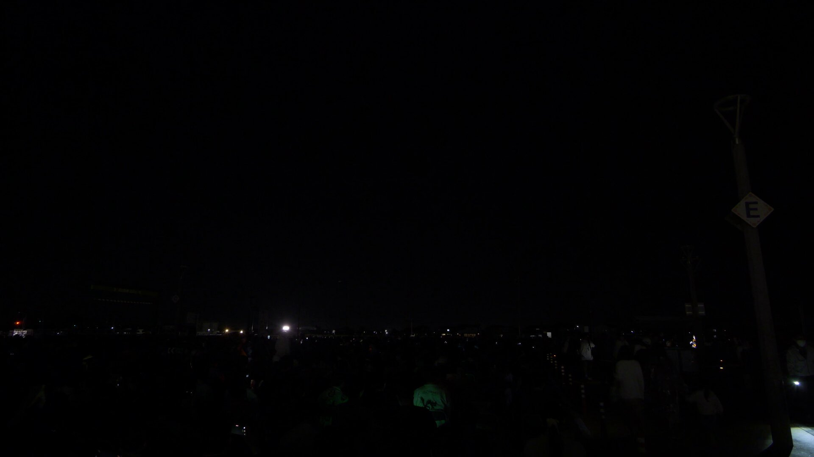
さたけ✺花火垢
@satake_hanabi
ちくせい花火大会、全編動画です！
シャニマス花火以外のプログラムでもPたちが盛り上がってくれて温かい雰囲気の花火大会でした
HDR版は引用元のYouTubeをご覧ください
[Chapter]
0:00:00 01 開幕の尺玉１発 / 山﨑煙火製造所 ♪ルパン三世のテーマ
0:01:56 02 x.com/satake_hanabi/…
さたけさんがリポスト
ちくせい花火大会、全編動画です！
シャニマス花火以外のプログラムでもPたちが盛り上がってくれて温かい雰囲気の花火大会でした
HDR版は引用元のYouTubeをご覧ください
[Chapter]
0:00:00 01 開幕の尺玉１発 / 山﨑煙火製造所 ♪ルパン三世のテーマ
0:01:56 02
さらに表示 (元の投稿を開く)
さたけ✺花火垢
@satake_hanabi
ちくせい花火大会 全編動画投稿しました
[HDR] ちくせい花火大会 2026 全編 Chikusei Fireworks All Program 茨城県筑西市
https://
youtu.be/zN10jpBDnDI?si
=rxsX4ds8EjizwyjF
…
#ちくせい花火大会 #筑西市シャニマスコラボ
#筑西市
「詰み」です
「統一教会とは違う、違法献金はない、献金は全て任意」
を証明したくても、こうした反証が一件でも明るみに出れば破綻です
「献金は任意」など虚偽と断言して構いません
弓月恵太
@ssomurice_local
［創価学会、不利だよな］
①受領書というエビデンスがある
②受領した当人が圧力をかけられたと主張している
これに対し創価学会が「私たちはそんな宗教団体ではない」と主張すると、受領者を嘘つき呼ばわりしていることとなる。
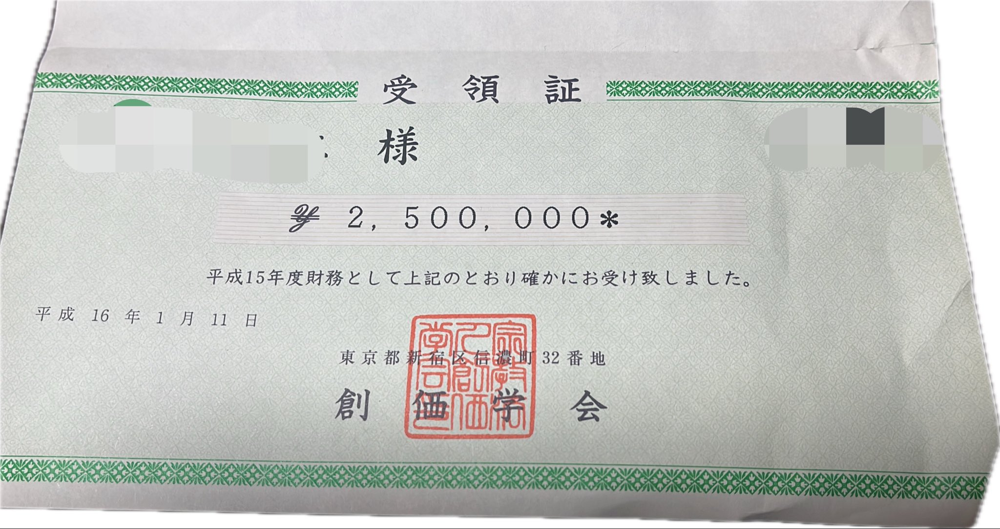
最近いつ行ったっけ
ポン☆潤々さんがリポスト
イベント中話題に上がったグローグースタンプ、
普段本を読む時に使っている栞に緑川さんから押していただきました！
可愛すぎません？（深町）
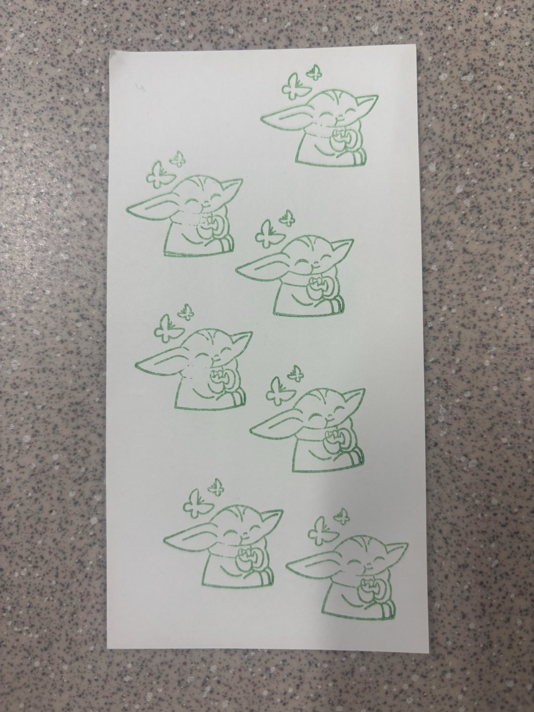
なるほど。
微妙に立ち位置どこか難しいわね…
人気女性YouTuberさん、お尻の穴が痒すぎて肛門外来を受診 → ヤバすぎる原因が判明ｗｗｗｗｗ #雑談・その他の話
人気女性YouTuberさん、お尻の穴が痒すぎて肛門外来を受診 → ヤバすぎる原因が判明ｗｗｗｗｗ - オレ的ゲーム速報@刃の記事ページ
jin115.com
NEC、無人の部署に35体のAIエージェント 「人件費」は月35万円

NEC、無人の部署に35体のAIエージェント 「人件費」は月35万円
ポン☆潤々さんがリポスト
#ツーフォーワン -TALK and LIVE 2026-
一部の緑川さん、二部の宗悟くん
ゲストが変わると全く違う雰囲気のイベントになりますね〜
お二人とも本当にありがとうございました！！
そしてライブパート、会場の皆さんが凄く盛り上がってくださって嬉しかったです！
ありがとうございました！！（深町）
百草園
#MSLL #ルルットリリィ #聖地
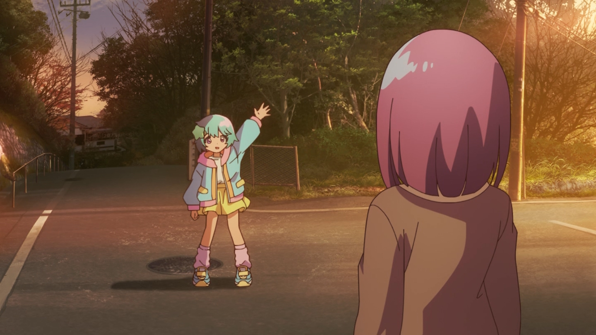
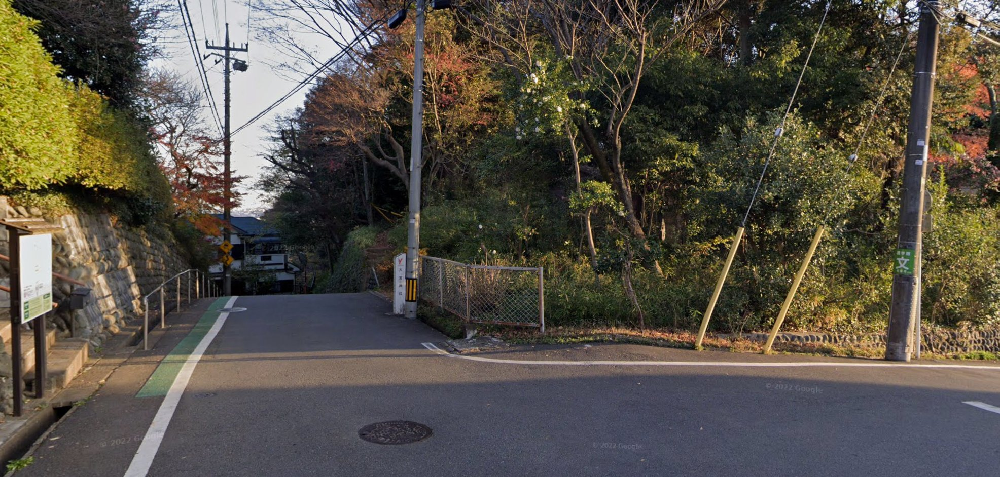
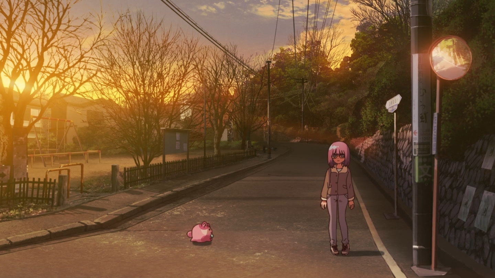
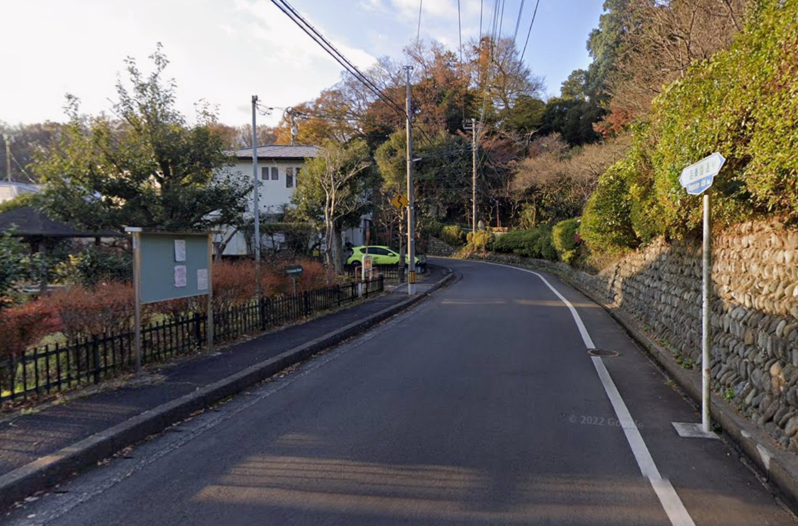
ピンマイク→手持ちマイクに変身。2Way仕様で便利＆お得なワイヤレスマイク
ピンマイク→手持ちマイクに変身。2Way仕様で便利＆お得なワイヤレスマイク | ギズモード・ジャパン
注文した中トロまだかな？
Kazuto Suzuki
@KS_1013
アメリカでも時折見かけるが、本当に果てしなく続く貨物列車。散歩に出掛けて1時間経っても、まだ続いていた。
なるせひろのりさんがリポスト
【カーセンサーの利用停止 復旧未定】
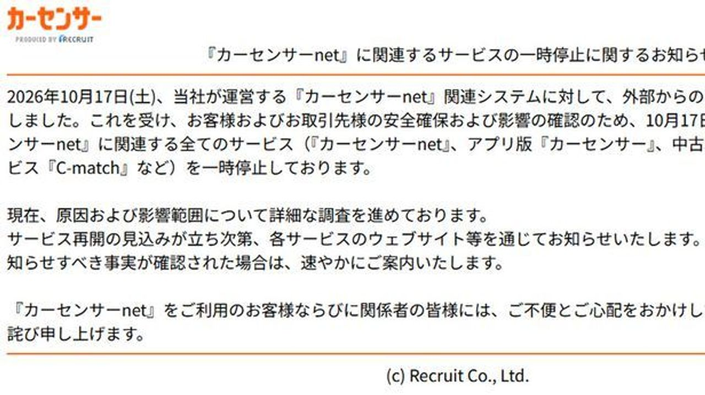
カーセンサーの利用停止 復旧未定 - Yahoo!ニュース
Torishima / INTPさんがリポスト
その通りだと思います 学問は「巨人の肩に立つ」と言いますが、かぐやと彩葉の再会に至らしめたこれまでの電気通信技術の進展があり、その上に、輪廻の先のハッピーエンドに至らしめる(彩葉による)生体技術の進展があるんですよね それらをひっくるめて技術というものの賛歌になっていると感じます
瀬古 梨愛さん、おれが、、、俺がっ……！！！
！？！？！？！？！？！？！？！？？！？！？！？
どえっち…セクシー…大人の色気…素晴らしい…
これが学生デモなんて嘘だ
デモ隊を全員逮捕してどこから来たか問い詰めろ
暇は無味無臭の劇薬
@NULLLUN_GaMeR
日本人による今日のフランスのレポ
「ルーブル美術館を出たら目の前で爆発と暴動と催涙ガス」
「警察もどこが安全か分からない」
「そこら中で爆発」
「道路は車が通れないよう封鎖」
「ホテルに帰れず立ち往生の旅行者多数」
「公共交通機関は全て止まってる」
#フランス
#移民反対
下神明駅
ＴＬにはむちゃんのおてて置いておくで
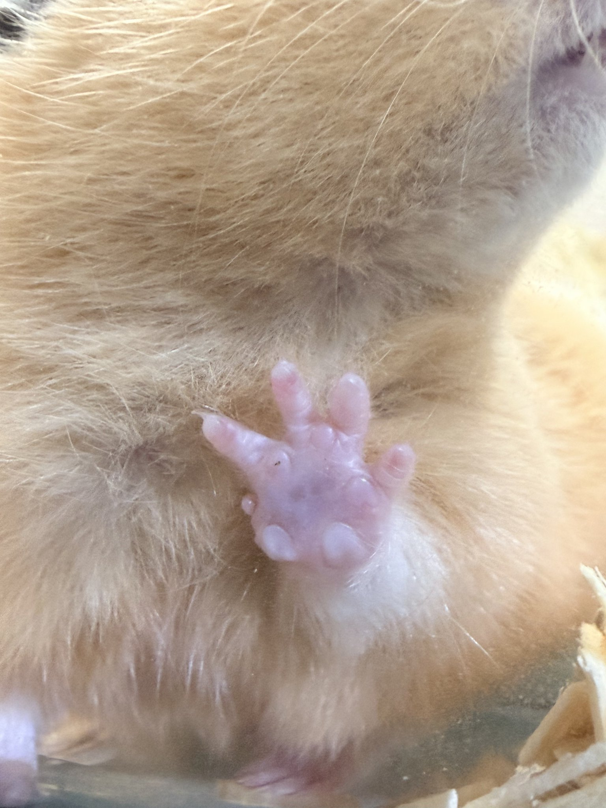
中道の立憲側諸君、聞こえるか？
カルト教団から逃げられると思うなよ？
「中道」の汚名は一生付き纏うぞ
擦り付けられないキングボンビーと行く無期限ボンビラス星の旅、せいぜい楽しんでくれよな！
三郎加工絵師
@kakoeshi
創価学会っていざ退会しようにも簡単にはできないようですね。
引用元の方は届けを出してから一年経っても退会できていなかったようです。
こんなに事務手続きが杜撰な組織あります？
それとも簡単に足を洗わせないということ？
#創価学会
パリに旅行に行ってたまたま暴動見れたら普通に感動すると思う。
東京の水害対策｢ためる｣から｢流す｣へ 環七地下の調節池結び巨大河川
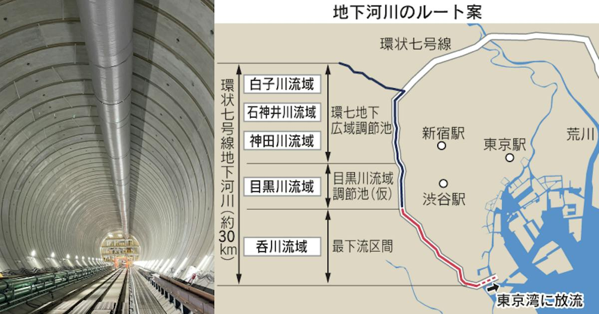
東京の水害対策｢ためる｣から｢流す｣へ 環七地下の調節池結び巨大河川
ユーフォ南中カルテット舞台挨拶いった 上映前だけどネタバレありで最高だった 東山さん：(3期は)真由しつこいいい！と思ってた笑！けど後編で好きになった！ 種﨑さん：(リズもう一回やるとなったら)私は無理(´Д` ) などてんこ盛り 特典交換あざました！
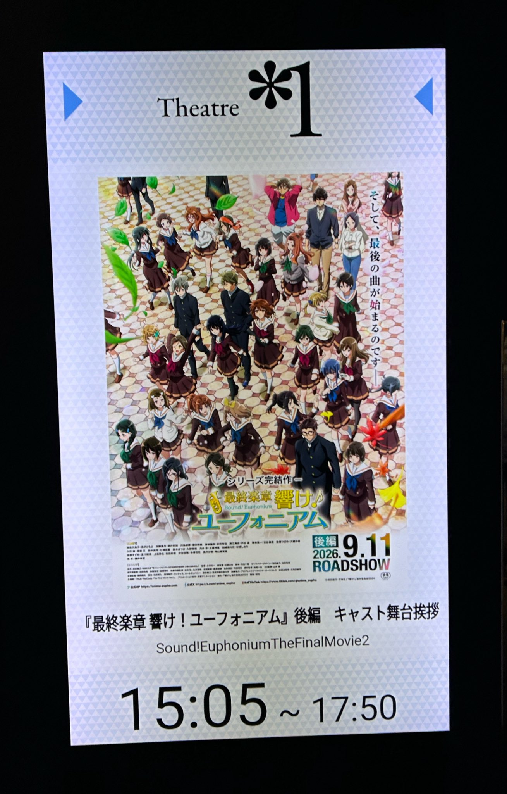
ポン☆潤々さんがリポスト
【スタッフ】
本日は「深町寿成・小松昌平 TWO for ONE -TALK and LIVE 2026-」に出演いたしました！
ご来場いただいた皆さま、配信をご視聴いただいた皆さま、ありがとうございました
アーカイブ配信もございますので、ぜひ何度でもお楽しみください！
#ツーフォーワン
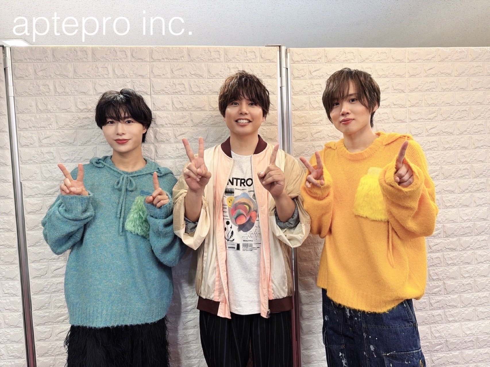
身長で舐められるわけにはいかない、インターネットでオタクに舐められるわけにはいかない、常に一段高くいる努力を怠るな
西春〜アイテムの力〜
@nishi_haru02
ちなみに秋アニメの身長tier最下層候補の『凶乱令嬢』様はわざわざ目を合わせなくても足払いを喰らい、無理やり見上げる構図にさせてくる。 x.com/nishi_haru02/s…
Astraみたいに手元のローカルLLMでBlenderモデリングとか出来るようになるのはいつになる事やら…と思ってたら微妙に手が届きそうになってる。5090x2はしんどいけどV100x2とかで何とかならんかな
ぱぷりか炒め
@WMjjRpISUEt2QZZ
StrataのDeepSeekV4.1-1017のQ4KMのおためし
なんとか最大瞬間100tok/s overできた。codex君に口挟みながら改善ループ回してもらった。10k超えたあたりから失速しちゃうけど55-60弱tok/sくらいは出るようになったのでよかった。
環境はRTX5090x2 RAM DDR5-4800 8chだけど、RTX5070ti
Twitterくんへ 二度と本日のニュースを勧めないでもらえませんか？？
LFIのメランションがデモ隊に同調してて、一応暴力沙汰は非難してはいるのだけど、LFIの支持率にどう響くんですかねぇ…
https://
france24.com/fr/france/2026
1017-apr%C3%A8s-les-violences-en-marge-du-17-octobre-s%C3%A9bastien-lecornu-et-jean-luc-m%C3%A9lenchon-s-%C3%A9charpent
…

へええ。日本人から見ても外国人向けでない食材No1だと思ってる「納豆」の輸出量が、健康食材として意外にも伸びてるんだとか。
https://
theguardian.com/food/2026/sep/
15/natto-superfood-japan
…
最近のAI周りの話（サイバー攻撃などなど）でロックマンエグゼの話をすると意外とわかってもらえることが多かったので、もうちょっと積極的に触れてもいいのかな・・・？
たしかにAI以前からゲームには堀がなかった。別にゲームのルールで特許や著作権が取れるわけで無し。ただしAIによってゲームは守ってくれるものが無いという事実をこれからつくづく思い知らされるでしょう。個人情報だってAIに関係なく元々漏洩するリスクがあったから迂闊に入力しないように気を付ける
さらに表示 (元の投稿を開く)
新清士@AIコンテンツ開発者
@kiyoshi_shin
いや、そうなんですよ。パクリ推奨なんてことは微塵も言う気はないけど。AIなくても、ゲーム業界はそういう歴史が多々あったよなと思う面はあり。ヴァンパイアサバイバーとか、マインクラフトとかとか
たった1.9kg。キャンプ時に5ポートから充電可能なAnkerのポータブル電源 BuyPR
たった1.9kg。キャンプ時に5ポートから充電可能なAnkerのポータブル電源 | ギズモード・ジャパン
Torishima / INTPさんがリポスト
【コミックシーモア 再開見通せず】

コミックシーモア 再開見通せず - Yahoo!ニュース
好きなコンテンツってないんだよな。
金を落とそうとも思わない。
ただアニメは来て去るもの。
アニメを見るという日常の行いそのものにしか意味がない。
#dnb / #EvolutionChamber
Audio - Final Protocol
https://
youtube.com/watch?v=DxYGpp
0MbY8&list=PLKnZEmN2u7mg
…
Evolution Chamber
➔Released: 17/10/2026
➔Cat: EC100
Don't forget to hit thumbs up and support Audio➔ Buy: https://w...
youtube.com
#dnb #liquidfunk / #CelsiusRecordings
Neuron & Dan Guidance - Feel Your Melody
https://
youtube.com/watch?v=NPkYwa
_5_fs&list=PLKnZEmN2u7mg
…
Neuron & Dan Guidance - Feel Your Melody
Celsius Recordings
CLS622
Neuron & Dan Guidance - Feel Your Melody
#dnb / #Metalheadz
Counter Culture - Make Me
https://
youtube.com/watch?v=_bGaWt
yUEAc&list=PLKnZEmN2u7mg
…
"Counter Culture makes his Metalheadz debut with a two-track release for the METHXX series."
Subscribe to the Metalheadz YouTube channel and make sure to turn n...
youtube.com
第一章部分を読み進めているけどかなりのボリューム。内容も濃いのでじっくり読んでいきたい。
貝さんさん
@morikai3
オリミナートで太田代表が店番していたので梅津監督のアニメーションワークスを購入。帰ってからじっくり読む。
#dnb / #HighTeaMusic
Dossa, AIRGLO - Dance All Night
https://
youtube.com/watch?v=FB2R8I
O4LtE&list=PLKnZEmN2u7mg
…
新しいレーベルコンピは翡翠烏龍茶。High Tea Musicもほんとリキッドファンク特化レーベルという感じでは無くなってきたな…
Buy / Stream: https://hypeddit.com/dossa-airglo/dance-all-nightFo...
youtube.com
画面の中の細かい伏線なんてどんな作品だって設置できるんだから瑣末主義に過ぎない。
能力的な意味じゃなくて、そもそも院卒前提みたいになってる気がするのでそもそも選考の土台に乗りずらいって意味です（優秀な人はどこでも優秀）
#dnb / #Monstercat
Arcando & IRAH - Killer Instinct
Arcando & IRAH - Killer Instinct [Drum & Bass | Monstercat]
ねくまさんがリポスト
トランプ氏「共和党勝てば製薬会社に巨額投資」 地元州知事側は反発
トランプ氏「共和党勝てば製薬会社に巨額投資」 地元州知事側は反発
#dnb / #WobblesWaffles
Cartoon & Artino - Ultraviolet
https://
youtube.com/watch?v=clEar_
kOXeQ&list=PLKnZEmN2u7mg
…
"A proper dancefloor banger to dance you into the weekend"
Cartoon & Artino - Ultraviolet
フォロワーがアイコンを奪われ動画紹介アカウントに使われてるけど、紹介されている作品に個性がなく、他の業者と同じような動画の切り抜きだし、もうちょっとそのフォロワーが好きそうなの紹介してくれよ。
#dnb / #RosebayMusic
Submorphics & Flaco - Indigo Silence
https://
youtube.com/watch?v=xxcvSw
4kAzw&list=PLKnZEmN2u7mg
…
"Dreamy sonics from Submorphics & Flaco - out now on Memory & Collapse, a 5-track mini album via Rosebay Music."
Submorphics & Flaco - Indigo Silence
そろそろこいつにフォロー飛ばすかみたいな時があるけど、お互い飛ばしてないのは飛ばさない理由があるからなんだよなと思い至り毎度手を止めてる。
達人の対決の間みたいなもんだよ、先に動いたら負け。
【宇都宮ジャパンカップ】観客が選手を妨害し落車発生 大惨事に
https://
hamusoku.com/archives/11049
254.html
…
1:名無しのハムスター2026年10月18日 21:36 ID:7xrLZlpK0
普通に犯罪として取り締まらないと
普通に考えて危険だってわかるだろうに
それともそれさえもわからない無敵の人なの？
さらに表示 (元の投稿を開く)
【宇都宮ジャパンカップ】観客が選手を妨害し落車発生 大惨事に : ハムスター速報
#bassline #garage / #NIGHTMODE
Arya - d e v i l
Arya - d e v i l
三匹目の面倒臭いオタクも登場
輿水畏子さんがリポスト
25→16←16
, 16 - まだ付き合ってない
25 - 未来のシェリーと付き合っている
#dnb / #DayOnesMusic
Sigma - ALLIGATOR
https://
youtube.com/watch?v=ybPV8O
NXcoo&list=PLKnZEmN2u7mg
…
"Sigma announce their second independent album and fifth artist album overall, marking another major chapter in the duo’s evolution. Entitled "COUNTRY GREAZE""
Sigma - ALLIGATOR
創価学会という反社会集団はね、
パーティ券の売上を申告しなかったレベルの金の汚さじゃないの
一般人の人生を破壊するほど悪魔的に汚い
汚いを通り越えて極悪
だから政党助成金を受け取るために1人残す程度何とも思わない、微々たる些事
統一教会と全く同じ
解散命令あるのみ
Dream Green Bird
@dakkai_banzai
一口一万円、というルールがあるではないですか（それ以下の金額も納付可能ではあるものの）。
そして、「限界財務」（私の地元では活動家たちが”スッテンテンの財務”と呼称）をすれば来世で裕福な身分に生まれ変わることができる、境涯革命できる（意味不明）などと囁かれてきました。
男性「結婚相談所で身長159cmは、大欠陥なので年収あっても普通の人を嫁にもらうのは無理と言われた…こういう人としか結婚できないらしい」 #恋愛ネタ
男性「結婚相談所で身長159cmは、大欠陥なので年収あっても普通の人を嫁にもらうのは無理と言われた…こういう人としか結婚できないらしい」 - オレ的ゲーム速報@刃の記事ページ
jin115.com
というか新卒理系技術職は現代だと院卒じゃないと厳しい気がするんだけどどうだろう（自分の時は基本全員院卒で、学部卒はより厳しくみられて全体の1割くらいの人数だった気がする）
日本経済新聞 電子版（日経電子版）さんがリポスト
ギフトにしたいクッキー缶10選、家族・取引先…大切なあの人に
ギフトにしたいクッキー缶10選、家族・取引先…大切なあの人に
5年後にやるんだ…
ゆきあつ祭り…
gaku
@gaku19721017
サプライズありがとうございました！
無事に54歳となりました笑
次回のゆきあつまつりは5年後ということは59歳ヤバイな
━━━━━━━━━━━━
Memories of
#楽園追放
━━━━━━━━━━━━
過去描き下ろされた
数多くのイラストを
劇場公開まで振り返ります
今回は
Febri Vol.22
￣￣￣￣￣￣
楽園追放通信 Vol.1
2014年4月10日
最新PV
https://
youtu.be/gdqs6y-6R3g
ミニスカ宇宙海賊の計算機のハードウェアが完成してしまって100年以上経ってしまったのでソフト側でしか効率が上がらないみたいな現実で進化中のデバイスが枯れてしまってるSFがすき
Torishima / INTPさんがリポスト
やっぱりAIにOK/NGを出す審美眼って、自分で作る脳と世の反応を想像する脳の両方の頭の回路が出来上がってないと育たないんだと思う。自分が専門でない分野のものをAIで作ってみてもやっぱり同僚や過去お世話になった人の顔が出てきて、その人らの出来に比べれば家庭の日曜大工みたいなもんやなと思っ
さらに表示 (元の投稿を開く)
千円札ぅ/ Drumatic Sequencer
@1000yensatsuxu
AI創作界隈の大多数がそうなんだが、AIで出来る出来ないがどうって話じゃなくて、単純にセンスが感じられない、選定者の審美眼がないもの多すぎない？
技術のお披露目してるだけであなた自身の表現力足りてないですよ
凄いお祭りでした
なんでビエラが司法試験クイズやってるんだ…って思ったけどよく見たらこたけ正義感だった
ふぇむさーどさんがリポスト
ぬるめた男子組回アニメ化してこいつ唸らせてほしい
ふぇむさーど
@Amaurot_003
人生において全く重要でもなくどうでもいい一瞬を何故かずっと覚えていることがある。日常系アニメとはそういうものであってくれ。
#techno / #Montage
BAUGRUPPE90 - Crowd Can't Sit Down
https://
youtube.com/watch?v=KbmBY1
lUucE&list=PLKnZEmN2u7mg
…
Artist: BAUGRUPPE90
Title: Crowd Can't Sit Down
Label: MONTAGE
Catalogue: MONTAGE002
Release date: October 16, 2026
Support the label, buy it here:https://baugruppe90.bandcamp.com/al...
youtube.com
青ブタを見て思うのは、逗子市内の描写が欲しかったなーと元逗子在住者が思っています。
とりあえず、映画観に行くか
#techno / #BipolarDisorder
ARGIÉ - Her Green Eyes
https://
youtube.com/watch?v=wUf2qE
qScsI&list=PLKnZEmN2u7mg
…
Artist: Argie
Title: Feral Attraction
Label: Bipolar Disorder Rec.
Catalogue: BDd044
Release date: October 16, 2026
ARGIÉ — Her Green Eyes [BDd044]
大手に書類選考なしでいくならインターンに行け！みたいな記事流れてきたけど、大手の技術系のインターン、下手すると本採用より書類選考倍率高いけどこれどうなんだろう（スタートアップはわからない）
YouTubeのシークバーってカスマイズできるんですねぇ。
生徒会にも穴はある、ドパドパした作りには少々辟易するがプール掃除や看病回など王道の日常をこなしている様は応援したい。
#dnb / #Warner #2Ruff
Chase & Status - Carnage ft. Little Simz
https://
youtube.com/watch?v=nRKCiT
w5kkA&list=PLKnZEmN2u7mg
…
F1公式が紹介してたの、この曲か。出たばかりのLP"Generic Everything"収録曲。
LPはUK Albumsで2位にエントリーしてましたね。
Chase & Status - Carnage (Official Video) ft. Little Simz
リジスさんがリポスト
イベント出演情報
蓮ノ空女学院スクールアイドルクラブ106期生キャストがアニメ・スタいしかわ2026のステージに出演決定！
日時：11月28日（土）13:00～14:00
ステージ観覧申し込みは明日【10月19日(月)17時】より
アニメスタ・いしかわ公式Xにて募集開始！
さらに表示 (元の投稿を開く)
iPhoneが11万円OFF。Amazonプライム感謝祭で対象のApple製品まとめ BuyPR
iPhoneが11万円OFF。Amazonプライム感謝祭で対象のApple製品まとめ | ギズモード・ジャパン
睡眠不足、2泊3日18万円の合宿で改善 NTT東日本系が事業支援
https://
nikkei.com/article/DGXZQO
UC161360W6A011C2000000/?n_cid=SNSTW005
…
参加者は指輪型端末で睡眠状態を確認し、アロマスプレー作りなどを体験します。実証では寝付き改善効果が約1カ月続いたほか、睡眠改善につながる生活習慣も定着しました。
睡眠不足、2泊3日18万円の合宿で改善 NTT東日本系が事業支援
捻くれたオタクが二匹飛び出してきた
Torishima / INTPさんがリポスト
クリスタの集中線ツールに納得がいかず、集中線・スピード線描写ツールをバイブコーディングして使っている。
ホワイトと黒線の合わせ技で自分の納得の行く集中線に近づいた。
普通に仕事に役立ってるぞ。
Torishima / INTPさんがリポスト
ぬるめた！！！！！！！！！やっていきます！！！！！！！！！
TVアニメ『ぬるめた』公式
@nlmt_anime
❑─────────❒
日常アニメの
シンギュラリティ
#ぬるめた
2027年アニメ化決定
❒─────────❑
原作｜こかむも
監督｜五十嵐海
シリーズ構成｜髙橋龍也
キャラクターデザイン｜小笠原真
制作｜ソワネ
公式サイト
https://
nlmt-anime.com
#NLMT
最初から白スク水着とけや、ヌルいねん
ふぇむさーどさんがリポスト
一見すると、ただの『萌え系』に見えるけど、サブカル系ファッション系オタクが好きそうとちうイメージが先行してしまう。スタイリッシュなデザインだからだろうか？気取った感じがあるんだよな。『俺はただの萌えアニメとは違う』という意志を感じる。
ふぇむさーど
@Amaurot_003
なんかタイムラインのなかでも捻くれたオタクが好きそうなやつがアニメ化決定したらしいな。おめでとうございます。
リボ払い、3話のテンポがひたすら悪かった。もう少し早めに話回して良いだろ。
アオのハコとか正反対みたいなの見てる奴らと戦うのがオタクだっただろ。
歪みを忘れるな。
Torishima / INTPさんがリポスト
花博チケットサイトの待機室の入り口を開く魔法の呪文が判明
「末尾にUUIDv4を追加した
https://
greenexpo2027.queue-it.net/?c=greenexpo20
27&e=prodreserve&cid=ja-JP&q=
…」
早く無限待機部屋公開されねーかな
ふぇむさーどさんがリポスト
特にひねくれたオタクです よろしくお願いします
anemoiの影響で無性にピザを食べたくなる。
未プレイ者に「anemoiのピザは、サマポケのチャーハンやKanonのたい焼きみないな位置付けだよ」というと分かってもらえた。
待ってた人、おめでとう！ PCスタンドの新星「UUUK」がついにセールに登場だ！
待ってた人、おめでとう！ PCスタンドの新星「UUUK」がついにセールに登場だ！ | ギズモード・ジャパン
ポン☆潤々さんがリポスト
「SECOND LINE Presents みんなに会いに行くよ! 第55回 in 静岡」
(ご出演: #室元気 様 #野上翔 様)
弊社所属 #赤羽ミオ が、昼の部の朗読シナリオを担当させていただきました。
ご覧いただいた皆様、関係者の皆様、誠にありがとうございました！
#みんあい
SECOND LINE official
@2ndl_info
「SECOND LINE Presents みんなに会いに行くよ! 第55回 in 静岡」昼の部、夜の部、終演致しました。
誠にありがとうございました。
ご参加頂いた皆様、ありがとうございました。
少しでも皆様に楽しさと元気がお届けできたのであれば幸いです。
#室元気 #野上翔 #みんあい
なんかタイムラインのなかでも捻くれたオタクが好きそうなやつがアニメ化決定したらしいな。おめでとうございます。
今季、TVアニメの先行上映会には全く行かなかったが、映画の完成披露上映会ばかり申し込んでる気がする。
『装甲騎兵ボトムズ 灰色の魔女』公式
@votoms_gh
『装甲騎兵ボトムズ 灰色の魔女』
完成披露上映会 開催決定！
━━━━━━━━━━━━━━
監督・押井守＆豪華キャスト陣が登壇予定！
【日時】11/8(日) 9:30の回（上映後舞台挨拶）
【場所】TOHOシネマズ 六本木ヒルズ
【登壇者（予定）】
押井守（監督）、沢城みゆき、安藤麻吹
えっちだ！！！！
「月収140万円」美容医療に流れる医師 求人6倍、診療分野の偏り拍車
「月収140万円」美容医療に流れる医師 求人6倍、診療分野の偏り拍車
輿水畏子さんがリポスト
#まのさば二次創作
#シェリハン
『超かぐや姫！』公式＠映画 復活上映中！さんがリポスト
音で楽しむ
109シネマズ港北 映画祭
#ライブ音響上映
10/30(金)～11/5(木)＜7日間限定＞
初開催決定
映画館に特設された
ライブ用スピーカーで
#超かぐや姫！ を
全身で浴びるように楽しもう
10/31土 21:25
11/2月 21:05
11/3火祝 発声18:20／21:15
11/4水 12:10
さらに表示 (元の投稿を開く)
吟子の和装アクスタを早朝のひがし茶屋街で撮影する会
#蓮ノ空生放送ようこそ106期
貝さんさんさんがリポスト
らいみく

R352、道は狭いけど舗装はボロボロという訳でもないし奥只見湖沿いは片側崖だから酷道でありながらもずっと森の中という事もなく視界開けてるからツーリングで行くにはいい道ではあるんだけどとにかくクソ長すぎる しばらくは山道走らんでいい
湘南ペンギン
@shonanpen
酷道を行く原付のおっさん
アニメスタいしかわ、一次応募終わってるんだが…？
#蓮ノ空生放送ようこそ106期
それで思い出したとか、思っていた事ですが、
初代ガンダムのホワイトベース。スフィンクスがモデルの玩具チックなデザインだと良く言われますが、
「前方の格納庫左右」と「後方のエンジンブロック左右」がパージできる仕様で（エンジンは劇中でも外していた）、良くできているなあと思うのです。
【雑談】ゲームしながら / ニコ生配信中
【雑談】ゲームしながら
Torishima / INTPさんがリポスト
「工学」に関する明示的な描写として、8千年の回想シーンの中で人類の電気通信技術の萌芽の象徴としてエジソン電球が点るカットがあるんですけど、10年後の酒寄博士のデスクにもエジソン電球が置いてあるんですよね ちなみにエジソン電球のフィラメントは「京都」の「竹」なので、隠喩という感じ
勝沼ぶどう
@katsunuma_budou
「超かぐや姫！」の脚本の好きなところ
・工学や技術は人間の幸福追求のためにこそあるという本質を描いているところ
・東京で一人暮らしする高校生の出身地を京都にすることで「田舎から上京」というコンテキストを敢えて排しているところ
・多摩丘陵での日常に対して花火大会を関東平野東部の沖積平
最近テレビでリアタイでアニメ見なくなったからな〜配信情報の方が大事
#蓮ノ空生放送ようこそ106期
＞ω＜さんがリポスト
ソーラーパネル買いに来た人がAndroid自動運転支援装置積んでて超盛り上がったw
ホンダセンシングハックしててやばいw
オンエアが北陸放送だけ夕方で草
#蓮ノ空生放送ようこそ106期
なるせひろのりさんがリポスト
#ぬるめた アニメ化決定しました
以降の最新情報は、
アニメ公式アカウント（
@nlmt_anime
）
からお知らせしていきます。
"日常”が一変する新作TVアニメーション
@1018_2100
“日常”が一変する
新作TVアニメーション
─────────
2026.10.18 21:00
─────────
❚ TVアニメ初監督
五十嵐海 @kaiikarashi
https://
youtu.be/zWlRWnyZNE0
この2週間で9月の長雨で溜まっていたバイク乗りたい欲をだいぶ発散できた 満足
飲んでるときフォロワーの「某声優がTwitterで言った『なんで声優と結婚したいの？職業でしか見てないのかな？』がムカつきすぎてブロックした。そうだよ。""女性声優だから""好きなんだよ。声優じゃなけりゃ興味ないよ」がカッコ良すぎて危うく全額奢ってしまうところでした
リジスさんがリポスト
オタクくん、色が九段下とか言ってて笑い止まらん

言質とっておこうかな…みたいな。
Torishima / INTPさんがリポスト
１．対応状況および調査進捗
今回の不正アクセスにおける侵入経路および攻撃手法の特定を行い、対処を実施しております。
あわせて詳細な解析を行い、不正アクセスによる影響範囲を特定中です。
２．影響範囲の調査状況
さらに表示 (元の投稿を開く)
Torishima / INTPさんがリポスト
『コミックシーモア』会員情報の流出に関するご報告（第3報）
この度、当社の電子書籍ストア『コミックシーモア』への不正アクセスに関して、お客様、お取引先様をはじめ関係者の皆様に多大なご迷惑とご心配をおかけしておりますことを重ねて深くお詫び申し上げます。
さらに表示 (元の投稿を開く)
「ステラソラ」，新章追加記念イベント「暁天を破る創生の光」を10月20日のメンテ後に開催
https://
4gamer.net/s/G086701.2610
18005
…
・限定巡遊者「セイナ（原点）」も参戦
・自分だけの空間作りを楽しめる「魔王ノ塔 Beta」も実装
・グッズやフィギュア，サントラなどゲーム外情報も盛りだくさん
でも人数2人ずつならドルケは一応足りてることになるのか… #蓮ノ空生放送ようこそ106期
リジス
@lidges
所属ユニットはまだ秘密です（消去法でドルケしかなくね？）
#蓮ノ空生放送ようこそ106期
お母さん「夫が子供に”東西南北”を教えてるんだけど、ナニコレそんなことある！？」→その驚愕の概念がこちら #雑談・その他の話
お母さん「夫が子供に”東西南北”を教えてるんだけど、ナニコレそんなことある！？」→その驚愕の概念がこちら - オレ的ゲーム速報@刃の記事ページ
jin115.com
冬季閉鎖まで残り1ヶ月足らずの行楽シーズンに数年ぶり開放ってのが予想を超えた殺到を招いたね…
なお、2回も投票したのに
知ってた速報
略しにくそう #蓮ノ空生放送ようこそ106期
宝生舞、萩原流行ら出演！ 90年代の渋谷に怪異が潜むPS1実写ホラーADV『東京SHADOW』の魅力。主人公がいきなり死ぬ異色作を振り返る【特集】
https://
gamespark.jp/article/2026/1
0/18/173769.html?utm_source=twitter&utm_medium=social&utm_content=tweet
…
ヤチヨ達がツクヨミのステージで歌って踊る
無料オンラインライブイベント
「ツクヨミ感謝祭～めちゃうまパンケーキパーティ～」
2026年12月26日(土)開催！
オンラインライブイベント『ツクヨミ感謝祭』公式サイト | 『超かぐや姫！』
東京・港区タワマンに違法民泊の疑い、3泊38万円 中国SNSで募集
東京・港区タワマンに「違法民泊」の疑い 料金は3泊38万円 ―マンション不都合な真実―
湯釜の渋滞、頂上駐車場閉鎖して麓のスキー場の駐車場からシャトルバス運行した方がいいレベルだけどもう今年は仕立てられないだろうし頂上駐車場にキャパが無いわけではないから来年も解放されるなら分散して混雑緩和されるだろうし一時的なものとして諦めるしかなさげ
なるせひろのりさんがリポスト
予測不能な日常描く「ぬるめた」TVアニメ化、2027年に放送開始 メインスタッフ＆ティザービジュアル公開
https://
natalie.mu/comic/news/694
228
…
原作のこかむも、五十嵐海監督からコメントも
#ぬるめた #アニプレックス
ヤチヨ3Dお披露目 全身公開
輿水畏子さんがリポスト
…シェリーさん?
#まのさば二次創作
ヘブバン×Angel Beats!コラボ復刻特設サイトにて、 過去の応援イラストを一挙公開中！ ぜひご覧ください
▼特設サイトはこちら
https://
heaven-burns-red.com/collab-angelbe
ats/gallery/index.html
…
/／
ヘブバン×Angel Beats!コラボ復刻記念
応援イラストを復刻掲載中
\＼
Art by フカヒレ（
@fuka_hire
）さん
#おかえりヘブバンAngelBeats
Torishima / INTPさんがリポスト
❑─────────❒
日常アニメの
シンギュラリティ
#ぬるめた
2027年アニメ化決定
❒─────────❑
原作｜こかむも
監督｜五十嵐海
シリーズ構成｜髙橋龍也
キャラクターデザイン｜小笠原真
制作｜ソワネ
公式サイト
https://
nlmt-anime.com
#NLMT
仏デモに伴う暴動、極左集団に多数の便乗犯 警察対応追い付かず
フランスのデモに伴う暴動、極左集団に多数の便乗犯 警察対応追い付かず
寄り道しつつ帰宅。溜めているアニメを観る。
一連のインシデントを受けて塩漬けされていたシステムの更新ラッシュはありそうな気がしますが、投資できるのかとAIを活用したとて供給制約がどうなるか次第ですね
orangeitems
@orangeitems_
いや、今の時代に合わせた新規システムの開発依頼が急増すると思ってる。何しろ過去のシステムの信用度が恐ろしく下がっている。
Jun Rekimoto: 曆本純一
@rkmt
山本理顕さん残念だったけど得票数一位の方が選ばれるのは当たり前だがすっきりする。 x.com/nhk_news/statu…
ロボットアニメとかで、搭乗するために長いトンネル滑り降りたり、イスが延々移動したりするシーンあるじゃないですか。
アレには理由がちゃんとあって、格好いいからです。あと、格納庫は基本的に危険な場所で、待機や生活する場所とは距離を置くべきです。あと、格好いいからです。
とりしま (Sub I/O)さんがリポスト
ハート目かわいいね
そろそろ背景が卯辰山と金沢駅以外のキービジュアルもどうでしょう
#蓮ノ空生放送ようこそ106期
Haruhiko Okumuraさんがリポスト
日本で第九が合唱されるようになったのは、第一次大戦のドイツ兵捕虜が鳴門で収容されてからです。鳴門に来る前に、丸亀市の本願寺塩屋別院に収容されたことから、塩屋別院で演奏されています。
師走恒例「第九」丸亀市の寺で合唱 始まりは約100年前 寺にやってきたドイツ兵捕虜との交流から【香川】 | TBS NEWS DIG (1ページ)
Torishima / INTPさんがリポスト
Terminal\.app 一筋のワイ、低みの見物
sh1ma
@sh1ma
結局中学か高校くらいからずっとiTerm2使っとるなあ。エディタさえSublime Text→Atom→VSCodeみたいな変遷があったけどターミナルはずっと変わらん
【多摩動物公園】コアラのあずまさん 採血風景の安定感が人間を超えてくる
【多摩動物公園】コアラのあずまさん 採血風景の安定感が人間を超えてくる : ハムスター速報
#めざめざ
第3話今夜放送です！
ぜひご覧ください
『目覚めたら最強装備と宇宙船持ちだったので、一戸建て目指して傭兵として自由に生きたい』アニメ公式
@saikyosoubi
本日より第3話放送
#めざめざ の放送・配信時間は画像を
TOKYO MX、dアニメストア、ABEMAにて21:30から！
#最強装備
湯浅ちゃん岡山なの！？！？
ラブライブシリーズのメインキャストで中四国地方出身者は初めてでは！？
#蓮ノ空生放送ようこそ106期
そろそろ呑まないとな
2本になってしまった…
モルック大会も、upcycleのハーフTTOも行けず
ポン☆潤々さんがリポスト
今日は深町クンと小松クンのイベント
にゲスト出演して来ました♪ 色々サプライズ出来て楽しかったなぁ7色のお土産は今日の素敵な思い出♪次はHE★VENS歌ってよ(笑)。オレも参戦するからあ！ちゃんと仲村クンにもお土産渡せました♪ あと、綺麗なお花ありがとうね
#ツーフォーワン
ポン☆潤々さんがリポスト
ありがとうございました！ツーフォーワンな皆様の楽しそうな顔が見られて嬉しかったです。
深町さん、スタイリストの仕事ありがとうございました。
緑川さん、舞台上にも客席にも多大なるファンサをありがとうございました。マンダロリアン観ます。
宗悟さん、そぽJ
#ツーフォーワン
リジスさんがリポスト
湯涌行った組からいただきました。ありがとうございます。
海外では教会でオケが演奏することはよくあるが、日本の寺で第九をやったのは初めて？
なるせひろのりさんがリポスト
これの何が凄いって、他のメディアの内閣支持率は横ばいなのに時事通信だけ下がってるの。つまり「支持率下げてやろうか」を本当にやってるんだよ。これ凄くない？
@jijicom
Yahoo!ニュース
@YahooNewsTopics
【「高市離れ」男性も加速 時事調査】
https://
news.yahoo.co.jp/pickup/6599110
『Rain98』体験版だけでアート300枚以上。異常なまでのこだわりが生んだ、1998年の渋谷と世紀末の空気感【開発者インタビュー】
https://
gamespark.jp/article/2026/1
0/18/173768.html?utm_source=twitter&utm_medium=social&utm_content=tweet
…
ヒロイン・玲奈が吸っているタバコの銘柄は……？
日本経済新聞 電子版（日経電子版）さんがリポスト
クレジットカードの不正利用が巧妙に サブスクが入り口、明細確認を
クレジットカードの不正利用が巧妙に サブスクが入り口、明細確認を
リジスさんがリポスト
#蓮ノ空生放送ようこそ106期 配信中
～ようこそ106期 新キャストお披露目！
TVアニメ新情報発表会！～
ご視聴はこちら
https://
youtube.com/watch?v=DfOHPr
vaCCs
…
#蓮ノ空美術部
#蓮ノ空 #lovelive
所属ユニットはまだ秘密です（消去法でドルケしかなくね？）
#蓮ノ空生放送ようこそ106期
葵とみおんが喧嘩するエピソード、絶対にありそう #蓮ノ空生放送ようこそ106期
赤→スリブ
青→ドルケ
黄→みらぱ
というステレオタイプな思考
葵はみらぱなの！？ドルケだと思ってた。でも喋り方聞いてたら確かにみらぱだな。 #蓮ノ空生放送ようこそ106期
Nothingのカール・ペイCEO「iPhone Duoはお金の無駄じゃない？」
Nothingのカール・ペイCEO「iPhone Duoはお金の無駄じゃない？」 | ギズモード・ジャパン
呉の秋と言えばこれ！
後で買おうと思うといつも売り切れてたのでやっと買えました！
$いが餅
ポン☆潤々さんがリポスト
そぽＪ(緑川さんからかわいいボールペン頂いちゃった！深町、昌平ありがとう！)
翌日、学園祭はもう終わったのに、
また別の男たちが代わるがわるやって来て、執拗な説教
人の話を聞くふりして何も聞かない
ただ自分たちの言いたいことだけを押し付けるスタイル
何より
「帰れない」
友人がいるから大丈夫と思っていたのが甘かった
さらに表示 (元の投稿を開く)
カルト教団のヤバさを体験したことは、後に創価学会に引きづり込まれそうになった友人を何人も救い出すことになった
「奢ってあげるから」
さらに表示 (元の投稿を開く)
僕が創価学会と出会った話でも述懐しましょうか
大学に入って半年ごろ、幼馴染の友人から突然連絡が来て
「大学祭やるから来ない？泊めてあげるよ」
と。
そのとき、彼が創価大学にいて八王子に住んでる事を初めて知った
「男は度胸、何でも試してみるのさ」
返事をして、当日八王子に向かった
ANA「ちいかわジェット」お披露目 10月19日羽田ー長崎から就航
https://
nikkei.com/article/DGXZQO
UC153ZG0V11C26A0000000/?n_cid=SNSTW005&n_tw=1792308945
…
機体に「ちいかわ」「ハチワレ」など8種のキャラクターをあしらいました。路線を固定せず羽田や伊丹、名古屋、福岡発着の国内線に投入。運航路線は当日までわかりません。
ANA、初の「ちいかわジェット」お披露目 19日羽田ー長崎から就航
時雨沢恵一（Sigsawa Keiichi）さんがリポスト
【今週の話題】『キノの旅 the Beautiful World』から原作イラストレーター・黒星紅白先生の描き下ろしイラストを使用した2026年版オンラインくじが「#くじ引き堂」に登場！
https://
hobby.dengeki.com/news/3194820/
#キノの旅
笑ってる…！
#蓮ノ空生放送ようこそ106期
もものすけさん、声を聴いたことありませんでしたが今日目の前で対面して確かに声を聴いたので僕の中で完全に""女性声優""になりました。僕は「Iカップに流されて謎の女性の写真集を買った弱男」ではありません。「声優の写真集を買った声豚」です！！！！
おぉ、RISC-V上で作業環境を再実装するのムッチャ面白そうだけど、こんなに字が小さくて目がチカチカしないのかな
shi3z
@shi3z
M5Stack Tab5向けOS(MeOS)向けに日本語入力IME(FEP)作った。インライン変換が可能。楽しい！ポメラいらんとはならないがポメラより小さいのが可愛い
AVITAMINOSEさんがリポスト
いつも通り言うこときかない政党がありますね
おぐ
@juoggggg
横浜市長選出口調査（政党別）
日本経済新聞 電子版（日経電子版）さんがリポスト
横浜市長選挙、原沢敦美氏が当選確実 パワハラ辞職の前市長ら6人破る
横浜市長選挙、原沢敦美氏が当選確実 パワハラ辞職の前市長ら6人破る
グラビアン声優井口 裕香によって「女性声優の写真集ってここまでエロくても良いんだ…」のラインだったのが、もものすけ写真集によって「女性声優の写真集ってほぼ18禁でもいいんだ……」に塗り替えられたまであります。僕は、今、震えてます。(股間が)
Iカップ声優もものすけさんの写真集拝見しました。もうね、沖縄とか行って「水着カットや大人なカットあります！」と謳ってた声優たちの写真集はなんだったんだという気持ちです。今までの声優写真集ともものすけ写真集、中学生とメジャーリーガーくらい差があります。股間からは以上です。
Torishima / INTPさんがリポスト
サイト作る意味が変わってきたからなあ。
人から見て貰うためにサイト作る時代が終わりつつあって、どちらかというとAIに正しく検索して貰うため、AIに社名とかブランドの存在を見つけてもらうためにサイト作ってるもん
日本経済新聞 電子版（日経電子版）
@nikkei
AI検索普及、ゼロクリック率68%に上昇 揺らぐサイト集客
https://
nikkei.com/article/DGXZQO
UC050C20V01C26A0000000/?n_cid=SNSTW006&n_tw=1792278667
…
ユウマボウズさんがリポスト
クズミミズク 『羽が生えた理由』MV
公開記念 リポストキャンペーン
応募方法
@gbc_firstriff
をフォロー
本投稿をリポスト
サイン入り色紙を抽選で5名様にプレゼント
2026年10月25日（日） 23:59まで
#ガルリフ #ガルクラ #クズミミズク #クズミミ
AVITAMINOSEさんがリポスト
【横浜市長選挙】出口調査で詳しく
新人・原澤敦美氏の初当選が確実です
NHKの事前の情勢取材や有権者を対象に行った出口調査では原澤氏がきわめて優勢です
支持政党別の投票先や期待する政策など、出口調査の詳しい結果はこちらから↓
横浜市長選挙 出口調査の結果は | NHKニュース
Torishima / INTPさんがリポスト
1.4kmの徒歩を薦めるあたり、流石の万博廃人っぽさがあるｗ
つじ@EXPert Otaku11/15サークル参加
@t_tsuji
横浜園芸博、入場ゲートからnull4（テトラﾇﾙ）までの歩行距離
1枚目：徒歩
2枚目：北西側モビリティ使用
3枚目：モビリティフル使用（南東側の駅の位置は予想程度）
待ち時間の無い徒歩が一番アドバンテージがあるとは思います
山中竹春ありがとーーー！！！おい下がれよ！！！フラッシュ焚くなーー！！！！！邪魔なんだよ下がれ！！！＼わーがひのもとはしーまぐによー／ありがとう山中竹春！！！ありがとーーー！！！お前入ってんだよ下がれ！！！！＼このよーこはまにー まさるーあらめやー／さよーならーー！！！！！
小島監督「一番怖いのは『DEATH STRANDING』を遊んでないエアプからの批評と、その認識が未だに残ってる事かな。遊べば面白さはわかるのにね」 #ゲーム業界
小島監督「一番怖いのは『DEATH STRANDING』を遊んでないエアプからの批評と、その認識が未だに残ってる事かな。遊べば面白さはわかるのにね」 - オレ的ゲーム速報@刃の記事ページ
jin115.com
最長52時間キンキンが続く、Ankerのポータブル冷蔵庫が4.5万円OFFでいいの？ BuyPR
最長52時間キンキンが続く、Ankerのポータブル冷蔵庫が4.5万円OFFでいいの？ | ギズモード・ジャパン
Samsungのスマートグラス、Metaより軽いらしいよ。スペックがリーク
Samsungのスマートグラス、Metaより軽いらしいよ。スペックがリーク | ギズモード・ジャパン
顔写真がちょうど「わたし」になる
たった200円のカプセルトイ→回してみると…… 衝撃の中身に「こんな夜中にみるんじゃなかった」「どこにあるん？」
https://
nlab.itmedia.co.jp/cont/articles/
4051362/
…
アニメ『ガールズバンドクライ』公式さんがリポスト
━━━━━━━━
クズミミズク
『羽が生えた理由』
Official Music Video
━━━━━━━━
ガールズバンドクライ YouTubeチャンネルにて、公開しました
#ガルリフ #ガルクラ #クズミミズク #クズミミ
「さらばマンション空室」 スペインや豪州で転売抑制、神戸も新税へ

「さらば空室」スペイン・豪州が対策、神戸は新税導入へ ―マンション不都合な真実―
湘南ペンギンさんがリポスト
【NHKニュース速報】
横浜市長選 新人の原澤敦美氏が当選確実 パワハラ問題で辞職の山中前市長ら抑え(20:00)
#nhk_news

NHKニュース 速報・最新情報
計画を立てるより、場の混乱に身を委ねろ！ 物理演算が生み出す予測不能な暴力アクション『Jackal』は、一味違う『Hotline Miami』ライクだ【特集】
https://
gamespark.jp/article/2026/1
0/18/173767.html?utm_source=twitter&utm_medium=social&utm_content=tweet
…
蹴り飛ばした敵が別の敵に激突、家具も壁も凶器に！ 何が起こるかわからない戦場を楽しめ
ヘブバン×Angel Beats!コラボ復刻特設サイトにて、 過去の応援イラストを一挙公開中！ ぜひご覧ください
▼特設サイトはこちら
https://
heaven-burns-red.com/collab-angelbe
ats/gallery/index.html
…
/／
ヘブバン×Angel Beats!コラボ復刻記念
応援イラストを復刻掲載中
\＼
Art by 館田ダン（
@done_kanda
）さん
#おかえりヘブバンAngelBeats
━━━━━━━━━━━━
#楽園追放
KEYWORD
【ヴェロニカ・クリコワ】
━━━━━━━━━━━━
https://
rakuen-tsuiho-r.com/special/keywor
d/
…
https://
rakuen-tsuiho-r.com/streaming/
地上に派遣されたディーヴァ保安局
エージェントの1人。
赤紫のセミロングの髪型が特徴。
マチアソビ2日間お疲れ様でした！
声優さんやアニメ関係の皆さんが初めて徳島を訪れるきっかけとなり、四国の認知度アップに貢献するイベントに成長しております。
このタイミングでないと会えない方も多いので、今後も定期的に顔を出していきたいと思います！
#マチアソビ
ガソリンは身近にありすぎて、そうとうに強力な危険物だって認識がだいぶ薄いよなあと思うばかり。
Torishima / INTPさんがリポスト
「我々は宇宙人」観てきました
恐ろしい程の熱量が注ぎ込まれていて苦しくなるほどでした
次回作が一体どんなものになるのか全く想像できないし、果たして同じ位情熱を注ぎ込める題材が監督の中にあるのかは分かりません。ただ映像作家としての才能は確かで今後が楽しみです
［社説］政府は対ロシア外交の有効性検証を
［社説］政府は対ロシア外交の有効性検証を
Torishima / INTPさんがリポスト
横浜園芸博、入場ゲートからnull4（テトラﾇﾙ）までの歩行距離
1枚目：徒歩
2枚目：北西側モビリティ使用
3枚目：モビリティフル使用（南東側の駅の位置は予想程度）
待ち時間の無い徒歩が一番アドバンテージがあるとは思います
さらに表示 (元の投稿を開く)
すとぷり、ガチでやばい・・・ #芸能・スポーツ
すとぷり、ガチでやばい・・・ - オレ的ゲーム速報@刃の記事ページ
jin115.com
記事読んで驚いたけどそんな人がいるの・・・？
セルフに年齢規制はないのかもだけど、最低でも運転免許が取れる歳にしたら（つまり１６か）。
Yahoo!ニュース
@YahooNewsTopics
【ガソリンスタンドで子が給油 危険】
https://
news.yahoo.co.jp/pickup/6599263
なるせひろのりさんがリポスト
ユーライアを動画でご覧くださいませ
X68ユーザーならこの凄さが分かるはず
なるせひろのりさんがリポスト
【お詫び】
今回の記事およびXへの投稿につきまして、岸田メル先生に対し、大変失礼で配慮に欠けた表現をしてしまいました。
結果、岸田メル先生にXアカウントをブロックされるという取返しの付かない状況になってしまいました。
さらに表示 (元の投稿を開く)
オレ的ゲーム速報＠刃
@Jin115
かつての超有名イラストレーター・岸田メル先生、現在がやばいことになってた・・・「へたくそなラクガキ量産おじさんになっててつらい」 #漫画・アニメ等
https://
jin115.com/archives/52460
913.html
…
日本経済新聞 電子版（日経電子版）さんがリポスト
よもやの「ブラックマンデー」回避の剣が峰
よもやの「ブラックマンデー」回避の剣が峰
Torishima / INTPさんがリポスト
どこきみが各劇場で小箱に追いやられている＆松竹にしては宣伝頑張ってる＆SNSでの口コミ効果が表れているおかげで満席の所が増えてるね
影艶
@Kagetsuya2002
どこきみ満席です
なんかうれしい
とりしま (Sub I/O)さんがリポスト
タワマンを買う１番のリスクって建物としての出口戦略が無い(解体しないといけなくなった時に解体・建て替え費用が捻出出来ない)事だと思うんだけど、もしかしてこのリスクって物件を法人名義で買う事で踏み倒せる？
法人名義の不動産って負動産化しても法人潰す事で事実上リスク無しで手放せるのでは
なるせひろのりさんがリポスト
市松ハリアー X68000版です 遂にここまで到達しました
これをみて凄いと分かる方はX68000 スペハリをよく存じている方だと思います！！ さらにEDでも同じ動きします
11月23日 68会でその目でで見てください
まだ改良を続けていますが 今月末までには終わりそうです
Torishima / INTPさんがリポスト
Amazon最終処分場の店来てみたけど陳列が自由すぎて見るの大変だった
Amazon限定特典付きのも投げ売りしているのか…
Torishima / INTPさんがリポスト
「チェーホフの銃」セオリー（問題提起は解決を描写するためにあるので、解決されないなら問題として提起してはならない）みたいな古い教科書的思考を内面化してる人がこんなに居たのか……って今回の話題で感じてる。
Daгwin
@kilingchocolate
ぶっちゃけ『親子間の対立は必ず和解しなければならない』っていうルールが創作の金科玉条とされてるのが納得いかない派としては、
超かぐや姫の彩葉が親の影響を断ち切って自立するのは充分に『親子間の対立』の伏線回収だと思うのよね… x.com/Kusanagi_Mizuh…
Torishima / INTPさんがリポスト
たぶんGoogleの検知システムは全世界的にユーザーの国からではない海外からのAPI利用が検出されて、漏れてる不正利用だなと判定して、ban処理を使って救いの手を差し伸べたつもり。
ユーザーの俺はそのban処理を誤解して、心当たり無いのに不正行為を疑われたと嫌な気持ちに。
さらに表示 (元の投稿を開く)
エターナル総書記さんがリポスト
創価学会という集金集団が、無数の経済困窮に陥った家庭を生み、人格形成に重要な少年期・青年期に逃げ場の無い環境に追い込まれてきた２世・３世を生んできたのか。過度な献金を煽られる事が状態化していた創価学会に、適宜適切に自由意志で献金を信者に求めていたと戯言を抜かす資格は寸分もない。
さちんぬ
@sachinnu_manga
私はこのカルトの二世でしたが両親、叔父叔母など親族のほとんどがカルトに依存していた為、毎年三桁（100万単位）が最低目標としている家庭内で育ち、義務教育である中学以降は財務の為のお金が足りなくなるという理由から創価系学校以外行かせないという家庭方針のもと育ました。 x.com/soka_youth/sta…
AVITAMINOSEさんがリポスト
どっちもどっちです
楽天: DKIM署名が h=From のみで、リプレイ耐性が低い運用だった。ここは明確に改善余地あり（＝楽天側に技術的な打ち手がある）。
docomo: dmarc=pass を「本物」と断定表示する設計。DMARC passは「DKIMかSPFのどちらかがFrom整合」を意味するだけで、リプレイ耐性は含まない。
Takenaka
@take_naka9
これって、ドコモが悪いのか、楽天なのか…どちらなんでしょうか
Torishima / INTPさんがリポスト
OpenCodeのAPIKEY漏洩で、Google API側は不正利用を検知して気を利かせてアカウント停止機能で対処してくれてた。
しかし規約違反banと同じ異議申し立てform表示のシステムを使ってたので、ユーザーの俺からしたら「色々とAIを使ってたらGoogleアカウントがヤバいことに」とテンションだだ下がりな感じ
Torishima / INTPさんがリポスト
案内標識を消灯しまくっている東京メトロだけど気合を入れてリニューアルした銀座だけはちゃんとつけているんだよな。やっぱり明るさが全然違うぞ。
『超かぐや姫！』公式＠映画 復活上映中！さんがリポスト
販売終了まであと1週間！
『超かぐや姫！』バンドルの販売期間は、残り1週間です
お見逃しなく！
Torishima / INTPさんがリポスト
これに関しては絶対に和解させちゃいけないってことをインタビュー内で答えてるからな。というより、彩葉には母に当たる存在が欠落してたからこその物語って構造になってるわけで
林
@AtRhtsiwww
超かぐや姫に対して『親子の対立をやったなら和解シーンをしっかり描け、描かないのは逃げ』って意見を見て
「必ずしも和解しなきゃいけない、親との和解無しに幸せにはなれない、なんてことは無いだろうに...」と思った
なるせひろのりさんがリポスト
このCMつくりたい。なう。
あつ森劇場 未来テレビ
@shi666
テスラの空飛ぶ車早く
高須クリニックのCMで見たい( ^ω^ )
テスラさんがリポスト
大切なもの
#さよならララ
#さよララファンアート部
リジスさんがリポスト
昼間に見かけてびっくりしたやつ。
なしてこっちに？
ねくまさんがリポスト
やっぱ悪いオタクと空いてる居酒屋に行くと
口が回り過ぎて良くないですね…
日本経済新聞 電子版（日経電子版）さんがリポスト
スバル、次世代車の投入期間を4割短縮 「大部屋開発」で工程効率化
スバル、次世代車の投入期間を4割短縮 「大部屋開発」で工程効率化
AVITAMINOSEさんがリポスト
リトアニアは、飛行物体を検知した後、住民にシェルターに避難するよう指示しました。
https://
reut.rs/4i6JUSs
Lithuania told residents to go to shelters after detecting a flying object
日本経済新聞 電子版（日経電子版）さんがリポスト
日経平均は戻り試す展開か、原油は上値探る 今週の市場・予定
日経平均は戻り試す展開か、原油は上値探る 今週の市場・予定
AVITAMINOSEさんがリポスト
HTTP[/]2でのアップロード中に解放済みメモリーを使用する脆弱性「CVE-2026-92392」を修正した、curlのバージョン8.23.0が公開。10月14日付のcurlの勧告によると深刻度はHighで、接続先の悪意あるサーバーが特定の条件をすべて満たせば、リモートコード実行に発展させられることが実証されています。
さらに表示 (元の投稿を開く)
なるせひろのりさんがリポスト
キシリトール多量摂取、心臓発作・脳卒中のリスク2倍に 24年研究
キシリトール多量摂取、心臓発作・脳卒中のリスク2倍に 24年研究
Torishima / INTPさんがリポスト
@BumpJP_amo
すみません、貴社のYouTube広告にINMU KINGの音源が使われている件についてお話ししたいのですが、可能であればご連絡をいただけますか？
ねくまさんがリポスト
#もものすけ1st写真集 『一等星』
発売記念イベントありがとうございました
とってもたくさんの方が会いに駆けつけてくれて、本当に感動しました
ずっと憧れていた「紙の写真集を出す」という夢が叶って、今日こうしてみなさんに直接お渡しできたことがすごく嬉しかったです！！
さらに表示 (元の投稿を開く)
AVITAMINOSEさんがリポスト
ロシアの衛星(COSMOS 2612)が
フィンランド×アメリカ×ウクライナのSAR衛星(ICEYE-36)に異常接近しているとのこと
そこで
ICEYE-X36搭乗目線で見てみます
本日正午頃(JST)から
目の前をうろちょろうろちょろと...
気持ちわるっ！！！！！
#ストーカーは犯罪です
isana
@lizard_isana
ロシアのKOSMOS 2612と米国が運用するICEYE-X36が数Km（場合によっては数m）まで接近しているとのこと。ICEYE-X36はフィンランドの企業が製造し米国政府が運用している小型の合成開口レーダー衛星。ウクライナ支援をしていると言われている。確かにとんでもなく近い。
https://
orbgraph.com/?speed=1¢e
r=satellite%3Acatid%3D68762&targets=satellite%3Acatid%3D59103%2Csatellite%3Acatid%3D68762
…
Torishima / INTPさんがリポスト
ハッカソンはね、外部交流とか刺激に成果物持たせて良いと思うけど、勝てなくて悲しくなってモチベが落ちるぐらいなら、身近な友人や学生課とか教授とか団体とかのために作ったっていいからね
語れる経験とともに何かを製作できるのがコアだから
さらに表示 (元の投稿を開く)
なるせひろのりさんがリポスト
倒されたのはシマノの選手でしょうか。
ツールドフランスでは選手に接触した観客に罰金15万円が請求されましたので、大会運営様は注意喚起の意味も含めこの方に罰金を請求すべきだと思います。でなければ観客マナーは変われません。
日本経済新聞 電子版（日経電子版）さんがリポスト
三菱重工、休眠造船ラインを再稼働 艦艇輸出の解禁受け建造能力確保
三菱重工、休眠造船ラインを再稼働 艦艇輸出の解禁受け建造能力確保
日本経済新聞 電子版（日経電子版）さんがリポスト
マイナ認証の導入、デジタル庁に相談６倍 相次ぐ不正アクセスで関心
マイナ認証の導入、デジタル庁に相談6倍 相次ぐ不正アクセスで関心
日本経済新聞 電子版（日経電子版）さんがリポスト
図書館で「おしゃべりと食事OK」
https://
nikkei.com/article/DGXZQO
UD171IM0X10C26A9000000/?n_cid=SNSTW005&n_tw=1792288506
…
カフェ併設やイベント開催など、「静かに読書する場所」だった図書館のコンセプトを見直す動きが拡大。民間の手法を取り入れ、地域の交流拠点としてにぎわいを生み出す狙いです。
図書館「会話・飲食OK」広がる 建て替え機に地域の交流拠点に変身
Torishima / INTPさんがリポスト
マチアソビ2日目ありがとうございました！
量産してた落書きも沢山写真撮っていただきありがとうございました！
最初に何も考えず現実のかぐやと彩葉を描いてましたが、途中からVRのキャラが増えていってなんだか変なことに…
最後永江さんの芦花(右上)も合流してくれました楽しかったです！
Torishima / INTPさんがリポスト
https://
x.com/sskaking/statu
s/2111447526998167883?s=46&t=aYALFZHuT6sCJ1XPcT2M8A
…
「チェーホフの銃が不発」という指摘にも同じことが言える気がする
全体最適化のため意図的に不発のまま配置されている銃はあるが、意図に気づいた時点で価値が生まれるのでもはや発砲されているようなもの
Q.じゃあは何の意図で配置されてるの？
A.ﾄﾞｩﾙﾙﾙﾙｰｶﾆ!
SSカキング
@SSKAKING
そういえば超かぐや姫はキャラコメで「チェーホフの銃の不発」つて言わせてたし、かなり自覚的に演出のお約束外ししてたんだな
日本経済新聞 電子版（日経電子版）さんがリポスト
ＡＮＡ、初の「ちいかわジェット」お披露目 19日羽田ー長崎から就航
ANA、初の「ちいかわジェット」お披露目 19日羽田ー長崎から就航
Torishima / INTPさんがリポスト
OpenCodeが「蒸留攻撃されてる～」とか言ってるの意味分からんかったけど、どうやら攻撃した犯人が盗んだOpenAIやClaudeのAPIキー使ってLLM蒸留用のデータ作ってるって事か。これなら垢バンされても食らうのは犯人じゃなくて被害者だ。なるほどね
Torishima / INTPさんがリポスト
AIが出てきたおかげで口だけ言って実行をしない人たちが淘汰されそうな感じがして嬉しい
ベリー中山@メインはBlueskyさんがリポスト
戸崎さん「ベリベリホース！」
観客「きゃああああ！」
現場からは以上です。
#モンローウォーク
#秋華賞
なるせひろのりさんがリポスト
こいつヤベー
通報したけど なんで捕まらないの？
ナンバープレート無し、ヘルメット無し
速度違反
モペットと思われる
貝さんさんさんがリポスト
───────────
みんなで観よう！
TYPE-MOON × ufotable
───────────
✧ 劇場版『空の境界』
✧ 劇場版『Fate/stay night [Heaven’s Feel]』
2つのシリーズが10月30日（金）より
各配信サイトにて配信開始することが決定！
11月20日（金）の劇場公開に向けて
さらに表示 (元の投稿を開く)

Torishima / INTPさんがリポスト
ぶっちゃけ『親子間の対立は必ず和解しなければならない』っていうルールが創作の金科玉条とされてるのが納得いかない派としては、
超かぐや姫の彩葉が親の影響を断ち切って自立するのは充分に『親子間の対立』の伏線回収だと思うのよね…
草薙瑞穂
@Kusanagi_Mizuho
親子間の対立って物語的には和解による解決をして然るべきだし、その場合はしゃくをとって描写するんだろうけど、超かぐや姫は親が改心するわけでもなく、彩葉が自立して親を必要しなくなるだけだからそんな描写必要ない x.com/kohinohito/sta…
なるせひろのりさんがリポスト
13周目、KOMまで約300m地点で身を乗り出した観客のタオルに引っ掛かって落車発生...
#宇都宮ジャパンカップ
#utsunomiyajapancup
#ジャパンカップ
Torishima / INTPさんがリポスト
フランスのデモ、暴力行為を行ったのはごく一部の超過激派で、ほとんどの参加者は平和的に行進したそうだよ 55万人がみんな大暴れしたわけではない
※webメディア『ル・モンド』『ロイター通信』の情報を参考にしたよ
Yahoo!ニュース
@YahooNewsTopics
【仏で55万人デモ 市庁舎ほぼ全焼】
https://
news.yahoo.co.jp/pickup/6599210
MICHEE-N（ミッチー・Ｎ）さんがリポスト
出席番号隣
スリムクラブ真栄田
@slimmaeken
昨日、沖縄で中学の同窓会だったんだけど仕事でいけなくてさ。友達からいっぱい写真送られて来たんだけど、同じクラスだった凄い人来てた。
ゆうきゆうマンガ家の精神科医マンガ心療内科(50巻以上/アニメ化)ゆうメンタルクリニックさんがリポスト
「そんなの常識」という言葉を連発する相手には注意してください。
「みんなそう言ってるよ！」
「みんなあなたのこと悪く思ってるよ！」
と根本的に一緒です。
結局「自分はこう思う」というとカドが立つから、
「いかにも常識だ」として語っているだけです。
なるせひろのりさんがリポスト
本当に信じられない！あるネットユーザーが発見したところによると、海尔滚筒洗衣機の上蓋板が、なんと密度板でできているという。
そのユーザーはまず、ひび割れを見つけて軽く抉ってみたら感触がおかしいと思い、抉り開けてみると、木材の粉末を圧縮した密度板で作られていることがわかった。
さらに表示 (元の投稿を開く)
今からここで第九
AVITAMINOSEさんがリポスト
飛行計画。打ち上げ能力最大化のため、第1段のスロットリングをしない。MMXは最大加速力のGに耐えられることを確認済み。
第2段は太平洋、南米を超えて大西洋までパーキング軌道でコースティング。大西洋上で第2回燃焼を行い、アフリカ上空で分離。
なるせひろのりさんがリポスト
マジでAmazonこれどうにかしてくれよ
こんなスカスカで緩衝材的なのも何も入ってないし中でめちゃくちゃ動くせいで液漏れたり袋割れたりして弁償すんのドライバーなの意味わかんないでしょ
もっとしっかりした状態で送ってくれよ
Torishima / INTPさんがリポスト
シミュレーション仮説ぽくてネタとしてのおもしろさはあるけど、人間の狭い尺度で人間以外の知能を定義している滑稽さが明確に浮き彫りになっていて(ハエの"世界"は人間の可視光領域の光学情報で表現される？)、セルフ風刺として機能しておりなかなか示唆があるなぁと思う。我々の視野はハエよりも狭い
Odyssey
@odysseyml
私たちはハエの脳を、フロンティア世界モデルであるOdyssey-3の中に配置しました。
この小さなヤツは今、完全に想像されたシミュレートされた世界の中を一人で飛び回っています
MICHEE-N（ミッチー・Ｎ）さんがリポスト
13時前後ごろに、ジェフ那覇店で、ぬーやるバーガーとハンバーガーをピックした配達さん、その商品はどうしたのでしょうか？
持っていかれた後に、私に同じ番号の案件来てお客さんに届けましたけど！
まさか ドロボーしてないですよね？
さらに表示 (元の投稿を開く)
なるせひろのりさんがリポスト
置き配で届いたんだけど、さすがに酷すぎん？？
写真では隠れるように置いてるけど、側面見たらこれ......
一旦、開封せずに問い合わせしようとチャットしたら、状況説明の返信はメールで24-48時間以内にとのことで
開けたあとに不足物とかあっても対応してくれるのかな？？
@AmazonHelp
@AmazonJP
エターナル総書記さんがリポスト
あなたは、パレスチナ人が我々を虐殺する中で彼らに味方した。
あなたは、パレスチナ国家を承認した。その目的が我々の破壊であることを十分に知りながら。
今、彼らはあなたのもとにやってきて、あなたの街を焼き払っている。
あなたに対しては同情の余地なし。
因果応報だ。
Torishima / INTPさんがリポスト
Claudeさん、『このリポジトリからはCodexの残り香を感じます』言うてて笑うwww
AVITAMINOSEさんがリポスト
IDCF第6報でた。
バックアップの安全性は確認できたと。お疲れ様です。
>「IDCFクラウド バックアップ」について、安全性の確認が完了したことからサービスの提供を再開
誠実。なかなか、障害報告にこれは書けない。
> 「IDCFクラウド
さらに表示 (元の投稿を開く)
IDCフロンティアより、プレスリリース、トピックス・ニュースリリース、メディア・ブログ、イベント・セミナーなどのご紹介です。
idcf.jp
Torishima / INTPさんがリポスト
AI創作界隈の大多数がそうなんだが、AIで出来る出来ないがどうって話じゃなくて、単純にセンスが感じられない、選定者の審美眼がないもの多すぎない？
技術のお披露目してるだけであなた自身の表現力足りてないですよ
日本経済新聞 電子版（日経電子版）さんがリポスト
50年住宅ローン、金利リスク高く 利息1000万円増えるケースも
https://
nikkei.com/article/DGXZQO
UB0329Q0T01C26A0000000/?n_cid=SNSTW005&n_tw=1792210103
…
毎月返済額を抑えられる一方、総利息や残債が重いという特徴も。50年返済のローンを組んだ会社員は「変動型金利が急に上がって、正直怖い気持ち」と話します。
50年住宅ローン、金利リスク高く 利息1000万円増えるケースも
Torishima / INTPさんがリポスト
技術も情熱も水準以下な人に頼らざるを得ず、実力者が疲弊しているという問題にこそAIを導入する意義があるように感じます。
鈴_アニメ演出家
@gyakusanenshutu
アニメ制作で絵を作る負担とは、、、
ほとんどは技術が足りない人を使っているかところから来ている。できない人の分を補わなければならないから疲弊する。
あとは単純に(描ける)人が足りない。
クリエイターを取って代わるためじゃないというけど、結果としてそうなってしまうと思うんだよね。 x.com/felixfilm2014/…
Torishima / INTPさんがリポスト
すみません、一瞬で削除されました。
恐らく音声が問題なのだと思います。
結論として、もうyoutubeには投稿いたしません。なぜなら曲を差し替えた場合それはもはや原型を留めているとは言えず、私の表現したいことが表現できないからです。
力及ばず申し訳ございません。
その名前はすでに使用されています
@tekitou115330
削除対策版のEU KINGをyoutubeに投稿しました。
Torishima / INTPさんがリポスト
これはもう何度も書いているけど、汐留もハーバーランドも清算事業団が入札しやすいように街区を細切れにして売って、街づくりを落札者に丸投げしたから
グラングリーンはその反省を生かして、URがプランを作って動線なども調整したから、今みたいな形になっている
日本橋・深川エリア周辺パトロール
@nihonbashibeach
同じ国鉄跡地の再開発でどうしてこんなに差が出てしまったのか…
←グラングリーン大阪
→汐留 x.com/monorisujp/sta…
つば二郎@きいちゃんすこすこ侍さんがリポスト
のどじまんのギャバン史上一番まとも
#のどじまん
なるせひろのりさんがリポスト
フランスが大混乱の中、
マクロン夫妻は何も対応せずに
セリーヌデュオンのコンサートを見に行きました
ちなみにマクロン大統領は
ダボス会議(WEF)が2016年
YGL（ヤンググローバルリーダーズ）に選出した
グローバルエリートです。
ダボス会議は
世界の経営者や官僚、政治家がコネを作る場所で
さらに表示 (元の投稿を開く)

滝沢ガレソ
@tkzwgrs
パトカーが襲われる様子も置いときます
その他、ヤバい映像が #17octobre というハッシュタグで多数上がってます
x.com/tkzwgrs/status…
AVITAMINOSEさんがリポスト
■赤松健の国会にっき （日曜に更新）
（３８１）いわゆるクレカ問題について 編
関係部局による内容チェック済み。（特に創作物の）表現の自由を重んじる人が、国会議員となって与党に入り、更に行政にも関わるようになりました。いよいよここまで来たかという感じです。
テスラさんがリポスト
お財布が銀座についていけません。
本編はリプライから▼
なるせひろのりさんがリポスト
公明党の８万円給付のカラクリがバラされて、創価学会が大炎上しているのが面白い。しかも、創価学会の被害者から次から次へと実例がポストされて地獄絵図となっている。公明党は８万円給付を起死回生のチャンスとしたかったのだろうが、次も無党派の票が減り、議席を減らすのだろう。
Torishima / INTPさんがリポスト
在仏の方が仰っていましたが…デモが起こると、どこからか集まってくる人達により暴動になり、デモの本質は失われ区別のつかなくなった事により無抵抗の市民が乱暴に取り押さえられ怪我をしたりするそうです。
湘南ペンギンさんがリポスト
湯釜渋滞
10：00過ぎで朝の3倍くらいかな。最後の方はもう間に合わないんじゃないかな
#湯釜 #草津白根山
ポン☆潤々さんがリポスト
京王eスポーツ祭りに京王多摩センター駅の名誉駅長「ハローキティ」、京王電鉄の「けい太くん」、日本テレビのお天気キャラクター「そらジロー」が揃い踏みです
Torishima / INTPさんがリポスト
という訳で、かつて広告宣伝のプロだった人間から言わせてもらうと、やはり宣伝に上手い下手はないってことで、強いて言うなら「情報さえ伝えればほとんど買ってくれる人達を無視して客を取りこぼすこと」くらいかと
さらに表示 (元の投稿を開く)
Torishima / INTPさんがリポスト
勘違いしてる輩がいるが、デモ活動してる人が庁舎を燃やしてるんじゃなくて、反社が便乗して火事場泥棒してる。 そもそもフランスの学校環境が余りにも酷すぎて 建物もボロボロすぎて教師も足りなすぎるから「高い税金払ってるんだから普通に勉強できる公的環境を作れ」というデモ。主張自体は真っ当。
Yahoo!ニュース
@YahooNewsTopics
【仏で55万人デモ 市庁舎ほぼ全焼】
https://
news.yahoo.co.jp/pickup/6599210
ろじぱら ワタナベさんがリポスト
中で鳴いてた。
なるせひろのりさんがリポスト
韓国は本当に注意が必要だ。。
こいつらは、ある意味で中国よりもっと危険だ。
원스토리
@won_story
ルペンが大統領になると、ムスリムのほぼ半数が
フランスを去るとの回答が出ました。
Ifop世論調査では、フランスのムスリム回答者の
46%が移住を検討すると答え、
20%は確実に去ると応答しました。
ムスリムは絶対に移民として
受け入れてはいけない思想を持っています。
Torishima / INTPさんがリポスト
門脇監督のキャリアはアニメが軸だけど、才能を見つけたのが実写が多いNOTHING NEW。
昨年の映画祭ANIAFFで日本からのコンペ3作品「ひゃくえむ。」「ホウセンカ」「無名の人生」全てが実写出身で、面白いなと思っていた。
さらに表示 (元の投稿を開く)
数土直志
@sudotadashi
「国際映画祭で日本のアニメ作品『我々は宇宙人』が大冠
実写とアニメの溝を壊す、新鋭監督の挑戦」
ニューズウィーク日本語版の連載を書きました。
全文は無料の会員登録が必要ですが、是非！
https://
newsweekjapan.jp/articles/-/336
977
…
Torishima / INTPさんがリポスト
こんな美しい建物が焼失
中の装飾も焼け落ちたんでしょうね
Torishima / INTPさんがリポスト
ヒット作を生み出すのに確実な法則も方法も無いのと同じで宣伝にも確実なものなんてないというのは言わずもがなレベルの業界の常識で、結局宣伝は確実に買ってくれそうな人に正確に情報を伝えることがやれることの最大限という結論に至るんだよね
さらに表示 (元の投稿を開く)
なるせひろのりさんがリポスト
道のど真ん中に駐車してるわナンバーさん…足湯に行ったんでしょうか。最近こういう車が多すぎてびっくりしてます。足湯の看板が少々わかりにくいのですが、町での対応はしない、と言われてしまいました警察呼んだらいいんですかね?
Torishima / INTPさんがリポスト
実は昔15年間ほど広告宣伝の仕事をしていて、その内半分は芸能関係だったから当然映画の広告宣伝にも関わっていたんだよね
さらに表示 (元の投稿を開く)
なるせひろのりさんがリポスト
フランスで移民に燃やされたのってこれだよ？これ今の技術で再建できるの？もう二度と造れないんじゃない？
しかも放火した移民は歓声上げて大騒ぎしてる。猿どもは自分が何をしてるのか理解できてない。本当に、本当に洒落にならない事態。
Torishima / INTPさんがリポスト
【仏で55万人デモ 市庁舎ほぼ全焼】
仏で55万人デモ 市庁舎ほぼ全焼 - Yahoo!ニュース
AVITAMINOSEさんがリポスト
5年以内に宇宙戦争が勃発する可能性があると専門家が警告しており、民間企業はすでに防衛へのシフトを始め、準備を進めている。
さらに表示 (元の投稿を開く)
なるせひろのりさんがリポスト
調べたらここ2018年に壊されたのを直したのに2024年にも壊れてるわ
可哀想すぎる、だんじりやってるヤツらって学習能力なさそうだもんな

たかぴさん@たか速
@108takapi_new
【悲報】だんじり祭り、勢い余って他人の喫茶店を破壊
↓
勢いよく進むだんじりが喫茶店に衝突
↓
店舗が破損する事態に…
エターナル総書記さんがリポスト
リヨンで店を襲われて破壊された花屋さんのインタビューでは「なぜ私の店を壊すのですか、ただの花屋ですよ」と壊している本人に聞いたら「面白いから」と答えた、と
森野咲
@inlaforet
私は「普通のデモ参加者と壊し屋は分けて考えるべき！」的な言説にはいまいち同意できない。こういう主張はたいてい後者を「ただ暴れたいだけの人たち」として政治的主体性を消し去ったうえで排除し、伝統的な労働組合型の「デモ」だけを正当な抗議として認めている。
なるせひろのりさんがリポスト
全然出た瞬間じゃない。
スピード出しすぎ。
判断遅すぎ。
普通に走ってたらノーブレーキ減速で対処出来る間合いだと思うが？
Mars@GSX-S1000GT
@mars176
「トンネル出た瞬間に軽が横断してきてフルブレーキ。タイヤが白く煙ってる時点で心臓止まってた。
後ろにバイクいたから『もし道譲ってたら…』って考えるとゾッとする。
これ、前の車が悪かったと思う？それともドラレコ車の判断がギリギリすぎた？
同じような経験ある人、何が一番怖かった？」
AVITAMINOSEさんがリポスト
人口50万人以上の都市がある都道府県
（2026年10月18日現在）
Torishima / INTPさんがリポスト
#超かぐや姫
Torishima / INTPさんがリポスト
映画のストーリーの良し悪し（好みと合う合わない）は観てみないと分かりえない事なので、どう足掻いても作品を選ぶ基準にはならないし、宣伝や口コミの段階で訴求ポイントにはならない
さらに表示 (元の投稿を開く)
シン・かわうそ
@bossakawauso
例えば、超かぐや姫！にドハマりした人にほとんど同じ話で更に面白くブラッシュアップした言わば「超かぐや姫！超完全版」というアニメを薦めたとする
ただし全キャラを新規キャラに総入れ替えしました！っていうものだったら、それを観たくなるものなのか？っていう……
ならないよね？
Torishima / INTPさんがリポスト
すらせず安易に失敗ルートに誘導するのは脚本家の怠惰だ」という価値観があるのだろうなと
逆にいうと、脚本家が試行錯誤をしたうえでなお失敗ルートを選ぶならそれは許容されるはずで、卒業ライブのvs月人戦はまさにこの構図だったりする
Torishima / INTPさんがリポスト
を組み込むこともできたわけで、それゆえ本編からは「んなテンプレ失敗ルートにするくらいなら（試行錯誤しないと辿り着けない）最適解を見せようぜ」という作為が察せるわけですよ
恐らく、我々はシナリオ単体ではなく最適解探索をしたという作為自体に価値を見出していて、その意味で「最適解探索
Torishima / INTPさんがリポスト
>> 死に戻りによる最適解探索
いい表現だなぁこれ
超かぐや姫、シナリオから「最適解探索のためになされた膨大な試行錯誤の痕跡」を読み取れるか、そして監督のその作為に共感できるか次第で評価が変わるんでしょうね
例えば、件の看病のシーンでは彩葉が激怒するという"しょーもないクリフハンガー"
むへどるり
@muhedoruri
でも時代も観客も変わった。映画よりゲームに馴染んだ観客はご都合主義を嫌っておらず、むしろ「このハッピーエンドに至る前に無限の失敗IFがある」という感覚を前提として共有している。
死に戻りによる最適解探索の最後の一回だけが完成したコンテンツになる。
Torishima / INTPさんがリポスト
いやもうリセットくるんかーい！！！
浦田 勇樹 | 生成AI×新規プロダクト開発@ブレインパッド
@yuki_urata
リセット日本時間の朝9-11時ごろまでであってくれ…！！！ x.com/thsottiaux/sta…
Wordle 1,947 4/6
Torishima / INTPさんがリポスト
INMU KINGのパロのヒトラーのやつ、日本人として出てくるのが東條英機なのが絶妙に日本人向けのマイルドさだよなとはちょっと思う。外国人があれ作ったら東條英機じゃなくて昭和天皇になってるはずなので
なるせひろのりさんがリポスト
アルジェリアの旗が見えます。パレスチナの旗が見えます。共産主義の旗が見えます。スリナムの旗が見えます。私が見えないのは、フランスの旗です…
とりしま (Sub I/O)さんがリポスト
スーパープログラマーかぐや
#超かぐや姫
海街@信州さんがリポスト
みんなきっと、こんな事件が起きたらお店は台湾の人たちにボイコットされちゃうだろうって思うよね。でも全然違いますよ〜〜。ネットでクリップがバズったら、翌日にはめっちゃ長蛇の列ができちゃいました
จรร.れいり@めざせร่างทอง!!
@Reiriesz
穴掘って出てきてまで殴りかかってくるなんて、めっちゃキレてる
x.com/taiwaninthaiey…
ふぇむさーどさんがリポスト
オスプレイだいたいこれ
Torishima / INTPさんがリポスト
今日淀川花火大会の日なのをすっかり忘れてて飛行機のチケット取ったんやけど
結果的に飛行機から花火観れたし結果オーライ
Torishima / INTPさんがリポスト
アニメーターが言っちゃいけないことかもしれないけど、現象を描きたいんじゃなくて頭に浮かんだイメージを再現して描きたいだけなので、説得力をあげるためにロトスコしよう！という意識にそもそもならない…
狙った画角が絶対に撮れる神のカメラと神の演技力があれば積極的に使ってた…かも。
Torishima / INTPさんがリポスト
東芝は小型化の方向にHDD技術を突き詰めた。スマホネイティブ世代には信じられないと思うが、東芝の1.8インチHDDは2001年に初代iPodに搭載された。最初は5 GBだった記憶容量は320 GBまでになった。さらに、0.85インチ・切手サイズのHDDも開発された。今にしてみると滑稽に見える程に尖った技術だった。
田中 秀治 / Shuji Tanaka
@mems6934
東芝のHDDは水平分業的だ。ガラスプラッターはHOYA、メディアはレゾナック、ヘッドはTDK、サスペンションは日本発条、モーターはニデックなどとサプライチェーンがある。この写真のレゾナック・山形工場は山形富士通のメディア工場だったが、2009年に昭和電工に譲渡。富士通のHDD事業は東芝に譲渡。 x.com/semi_journal_j…
Torishima / INTPさんがリポスト
さすがにこれは証拠隠滅では。被害者としては納得できない。
ごんた
@TjPqXb5YO700Qs7
タイムズの「免許証画像全消し」発表、これが、なぜ約160万人の被害者にとって「絶望的なシナリオ」になり得るのか？
タイムズの2026年10月16日の発表、これ、相当まずくないか？ :(；ﾞﾟ’ωﾟ’):
さらっと、とんでもないことが書かれてる。
↓
Torishima / INTPさんがリポスト
山下監督「かぐやはこう動くはず…」（脚本ｶｷｶｷ）
「ﾀﾞﾗﾗﾗﾗ、カニ！」
白猫ちゃん
@ex_kuronekochan
他の映画見てないから知らんけど、
"山下監督はこのキャラならこう動く(感じる)を優先させてる"
ってのはよく分かる。声優の皆さんの力も大きいと思うけど、キャラが脚本に動かされてるんやなくてキャラが存在するように自然に動いてるのを感じる。 x.com/27168_cpk/stat…
とりしま (Sub I/O)さんがリポスト
彩葉3Dお披露目 全身公開
Torishima / INTPさんがリポスト
再審査を請求したところ、却下されました。しかし、どの箇所が問題なのか判断するのが難しいため、youtube版は登場人物の全面的な差し替えを行います。
一から動画を生成し直すため、時間がかかると思います。もうしばらくお待ちください。
その名前はすでに使用されています
@tekitou115330
誠に残念ながら、youtube版のヒトラー版INMU KINGが削除されてしまいました。現在は再審査請求を行うとともに、問題のある個所の編集を進めています。
再審査請求の結果を見てから、再投稿するかの判断をいたします。それまではXまたはニコニコ動画での視聴をよろしくお願いいたします。
Torishima / INTPさんがリポスト
野である三郷にすることで「空の広さ」を非日常の演出に用いているところ
Torishima / INTPさんがリポスト
「超かぐや姫！」の脚本の好きなところ
・工学や技術は人間の幸福追求のためにこそあるという本質を描いているところ
・東京で一人暮らしする高校生の出身地を京都にすることで「田舎から上京」というコンテキストを敢えて排しているところ
・多摩丘陵での日常に対して花火大会を関東平野東部の沖積平
Masanori Kusunoki / 楠 正憲さんがリポスト
テスラのロードスターを既存技術の組み合わせと冷笑してる人も居るけど、少なくともあのバルブはヤバイ。30MPa〜70MPaの高差圧を締め切りながら、50〜100kg/s程度を流せる容量があり、姿勢制御に使える高応答性がある。こんなの見たことない。バルブを制するものは流体機械を制す。
AVITAMINOSEさんがリポスト
「大阪城を建てたのは大林組」なんて言われるけど、実はSRC造（鉄骨鉄筋コンクリート造）としては現存する日本最古の建物という価値があります
NHK大阪ニュース
@nhk_bknews
「大阪城天守閣」が国の重要文化財に指定へ
https://
news.web.nhk/newsweb/na/nd-
20261016de60544
…
#nhk_video
AVITAMINOSEさんがリポスト
「『楽天カード公式』から詐欺メール」報告相次ぐ ドコモメールに公式マーク付きフィッシング、一部企業の認証設定に脆弱性
「『楽天カード公式』から詐欺メール」報告相次ぐ ドコモメールに公式マーク付きフィッシング、一部企業の認証設定に脆弱性
輿水畏子さんがリポスト
クリア記念ｼｪﾘﾊﾝﾁｬﾝ
シェリハン、ずっとずっとずっと幸せであれ。。。。。
#まのさば二次創作
矢島綾人/ハチヨンマルさんがリポスト
今回1番の拡散希望な曲でMVも最高なの出来たの
https://
youtu.be/7o-iMNfindA?si
=az3iSOXMrJ-xky7x
…
配信
https://
linkco.re/bGt210Qy
矢島綾人/ハチヨンマル
@you1_yajima
続きましてー
こちらはまだMV作ってないというか、普通にダンスボーカルグループにカバーしてもらいたい
https://
linkco.re/u3YQX2qy
#AAA ヲタでしたが今のグループだと #GENIC 良いよね♪
Torishima / INTPさんがリポスト
Yomitoku(引リツ元が作者)は他のOCRの追随を許さない精度があると思うから全人類使うべき
個人プロジェクトでレシートとかのOCRで使わせてもらったりClaude Codeのスキルとして使ったりしてるけどかなりいい
OCRしたデータを構造化データに起こせるのが強すぎる
https://
github.com/kotaro-kinoshi
ta/yomitoku
…
Kotaro Kinoshita / MLism
@KINOCOAI
「OCR作ってる」って言ったら、うちはTesseractを使ってるとかドヤ顔で言われたことあります。この業界は昔からある業界ではあるので、ジェントルメンから微妙な精度のOSSで謎マウント取られるのはあるあるです。 x.com/terurou/status…
Wordle 209 6/6